Topic 1: the microbial world
Microbiology is defined by size rather than by ancestry. The organisms in this course sit in all three domains of life and include agents that are not organisms at all. What unites them is that they are studied as populations of cells (or particles) rather than as individuals, and that almost every one of them was invisible until Hooke and Leeuwenhoek built lenses good enough to resolve them in the 1670s.
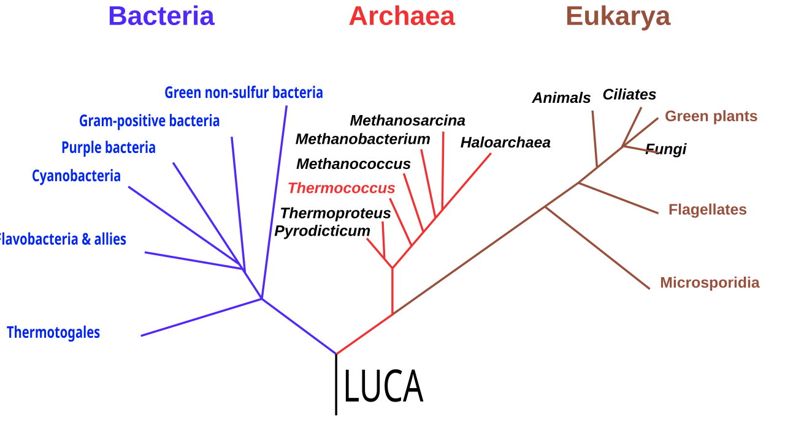
1.1 The microbes
Carl Woese sequenced small subunit ribosomal RNA (16S in prokaryotes, 18S in eukaryotes) and used it as a molecular clock. That gene is present in every cell, does the same job everywhere, and changes slowly enough to compare distant relatives. The result overturned the old prokaryote/eukaryote split: what had been called bacteria was two separate domains, Bacteria and Archaea, and Archaea turned out to be the closer relative of Eukarya.
| Feature | Bacteria | Archaea | Eukarya |
|---|---|---|---|
| Nucleus | None, nucleoid only | None, nucleoid only | True nucleus with envelope |
| Membrane lipids | Ester-linked fatty acids, glycerol-3-phosphate | Ether-linked isoprenoids, glycerol-1-phosphate | Ester-linked fatty acids, glycerol-3-phosphate |
| Cell wall polymer | Peptidoglycan (murein) | Pseudomurein, S-layer, or none | Chitin (fungi), cellulose (algae), or none |
| Ribosome | 70S (30S + 50S) | 70S but eukaryote-like proteins | 80S (40S + 60S) |
| RNA polymerase | One, 4 subunits, sigma factors | One, 8 to 12 subunits, TBP and TFB | Three, 12 or more subunits |
| Chromosome | Usually one circular | Usually one circular | Several linear |
| Histones | Absent, uses NAPs such as HU | Present in most groups | Present |
| Introns in protein genes | Rare | Rare | Common |
| Sensitive to | Penicillin, streptomycin, chloramphenicol | Neither of those; some to diphtheria toxin | Cycloheximide, diphtheria toxin |
| Initiator tRNA | Formylmethionine | Methionine | Methionine |
Scale
Size sets the physiology. A small cell has a large surface area to volume ratio, so it exchanges nutrients quickly and grows fast; a large cell must solve transport problems that a small one does not have.
| Entity | Typical size | Note |
|---|---|---|
| Poliovirus | 30 nm | Near the lower limit for anything infectious |
| Bacteriophage T4 | 200 nm long | Head plus contractile tail |
| Mycoplasma | 0.2 to 0.3 µm | Smallest free-living cell, no cell wall |
| Escherichia coli | 1 by 3 µm | The reference bacterium |
| Saccharomyces cerevisiae | 5 to 10 µm | Budding yeast |
| Human red blood cell | 7 µm | Useful scale marker on a smear |
| Paramecium | 200 µm | Ciliate, visible to the naked eye |
| Thiomargarita namibiensis | up to 750 µm | Largest known bacterium, mostly vacuole |
Light microscopy resolves to roughly 0.2 µm, set by the wavelength of visible light. Anything smaller needs electron microscopy, which is why viruses stayed hypothetical until the 1930s even though Beijerinck had inferred a filterable agent in 1898.
1.2 Microbial genetics
Microbial genomes are small, gene dense and fluid. In E. coli K-12 about 88 per cent of the 4.6 Mb chromosome codes for protein, against a few per cent in the human genome. Genes for one pathway sit together in operons and are transcribed as a single mRNA, which is why bacterial regulation can be described in terms of switches on short pieces of DNA.
| Genome | Size | Genes | Comment |
|---|---|---|---|
| Carsonella ruddii | 0.16 Mb | ~180 | Insect endosymbiont, extreme reduction |
| Mycoplasma genitalium | 0.58 Mb | ~470 | Benchmark for a minimal cell |
| E. coli K-12 | 4.6 Mb | ~4,300 | Model organism |
| Streptomyces coelicolor | 8.7 Mb | ~7,800 | Large secondary metabolite capacity |
| Sorangium cellulosum | 13 Mb | ~9,400 | Largest bacterial genome known |
| S. cerevisiae | 12 Mb | ~6,000 | Eukaryotic microbe for comparison |
Two features make microbial genetics different from eukaryotic genetics. First, these cells are haploid, so a mutation shows its phenotype immediately with no dominance to hide it. Second, DNA moves sideways between lineages by horizontal gene transfer, using transformation, transduction and conjugation. Antibiotic resistance, toxin genes and whole metabolic pathways spread that way, which is why a strain can acquire a trait its parent never had and why a single tree drawn from one gene can disagree with a tree drawn from another.
Mobile elements do much of that work: plasmids replicate independently and carry accessory genes, transposons hop within and between replicons, integrons capture resistance cassettes in series, and integrated prophages leave virulence genes behind. Full treatment is in Topic 9.
1.3 Microbial physiology and ecology
Microbes exploit every energy source that is thermodynamically available. Classification runs along three independent axes, so a full description needs one term from each.
| Axis | Category | Source used | Example |
|---|---|---|---|
| Energy | Phototroph | Light | Cyanobacteria |
| Chemotroph | Chemical oxidation | E. coli | |
| Electron donor | Organotroph | Organic compounds | Most bacteria and all fungi |
| Lithotroph | Inorganic compounds (H2, H2S, NH4+, Fe2+) | Nitrosomonas | |
| Carbon | Autotroph | CO2 | Nitrobacter |
| Heterotroph | Organic carbon | Pseudomonas |
Combining the axes gives the labels used throughout the course: a photolithoautotroph such as a cyanobacterium runs on light, water as electron donor and CO2; a chemolithoautotroph such as Nitrosomonas runs on ammonia oxidation and CO2; a chemoorganoheterotroph such as E. coli uses one organic compound as both energy source and carbon source.
Biogeochemical cycles
Elements cycle because oxidation states that one group of microbes creates are food for another. No single organism closes a cycle; communities do.
| Process | Conversion | Who does it |
|---|---|---|
| Nitrogen fixation | N2 to NH3 | Rhizobium, Azotobacter, Anabaena |
| Nitrification, step 1 | NH3 to NO2- | Nitrosomonas, ammonia-oxidising archaea |
| Nitrification, step 2 | NO2- to NO3- | Nitrobacter |
| Denitrification | NO3- to N2 | Pseudomonas, Paracoccus |
| Anammox | NH4+ + NO2- to N2 | Brocadia (Planctomycetes) |
| Sulfate reduction | SO42- to H2S | Desulfovibrio |
| Sulfide oxidation | H2S to S0 or SO42- | Chromatium, Beggiatoa, Thiobacillus |
| Methanogenesis | CO2 + H2 or acetate to CH4 | Methanogenic archaea only |
| Methanotrophy | CH4 to CO2 or biomass | Methylococcus, ANME archaea |
Life in communities
Most microbes in nature live in biofilms: surface-attached communities held in a matrix of extracellular polysaccharide, protein and DNA. Cells inside a biofilm behave differently from planktonic cells. They tolerate antibiotics and disinfectants at concentrations up to a thousand times higher, partly because the matrix slows penetration and partly because interior cells grow slowly. Biofilms cause catheter infections, dental plaque and pipe fouling, and they are coordinated by quorum sensing (Topic 8.5).
Extremophiles mark the physical limits of life: Pyrolobus fumarii grows at 113 °C, Picrophilus at pH 0, Halobacterium in saturated brine, and Deinococcus radiodurans survives radiation doses that shatter its chromosome, which it then reassembles. Their enzymes are the source of tools such as Taq polymerase.
1.4 Microbes and disease
Most microbes are harmless or useful. The human microbiome contains roughly as many bacterial cells as human cells, and it trains the immune system, excludes pathogens and supplies vitamins. Disease is the exception, and proving that a given microbe causes a given disease took a formal argument.
The postulates fail for organisms that cannot be grown in pure culture (Treponema pallidum, Mycobacterium leprae), for asymptomatic carriers who violate the first postulate, for diseases with no animal model, and for polymicrobial disease such as periodontitis. Molecular Koch's postulates replace the organism with the gene: inactivating a candidate virulence gene should reduce virulence, and restoring it should restore virulence.
| Term | Meaning |
|---|---|
| Pathogen | Organism able to cause disease |
| Opportunistic pathogen | Harmless in its normal site, dangerous when host defences fail or it is displaced |
| Virulence | Degree of pathogenicity, often measured as LD50 or ID50 |
| Infection | Growth of the organism in or on a host |
| Disease | Damage to host function resulting from that growth |
| Reservoir | Where the pathogen persists between hosts |
| Zoonosis | Disease transmitted from an animal to a human |
| Vector | Living carrier, usually an arthropod, that moves the pathogen |
| Virulence factor | What it achieves | Example |
|---|---|---|
| Adhesin, pilus | Attachment to a specific tissue | Type 1 fimbriae of uropathogenic E. coli |
| Capsule | Blocks phagocytosis and complement | Streptococcus pneumoniae |
| Invasin, secretion system | Delivers effectors, drives entry into cells | Salmonella type III secretion |
| Exotoxin | Secreted protein that damages or subverts host cells | Cholera toxin, diphtheria toxin, botulinum toxin |
| Endotoxin (LPS lipid A) | Triggers fever, inflammation, septic shock | Any Gram-negative cell wall |
| Siderophore | Steals iron from host transferrin | Enterobactin |
| Antigenic variation | Escapes the antibody response | Neisseria gonorrhoeae pilin, Trypanosoma VSG |
| Intracellular survival | Hides from humoral immunity | M. tuberculosis blocks phagosome maturation |
Exotoxins and endotoxin are worth separating carefully. An exotoxin is a protein, is secreted, is specific in its target, is often lethal in nanogram amounts, and can be inactivated into a toxoid for vaccination. Endotoxin is the lipid A part of lipopolysaccharide, is a structural component released when the cell lyses, is heat stable, acts through the innate immune system rather than on a specific target, and cannot be made into a toxoid.
Back to topTopic 2: bacteria
The bacterial cell looks simple at low resolution and is not. It has a defined cytoskeleton, spatially organised cytoplasm, a chemically layered envelope, and surface structures that decide where it sticks and how it moves.
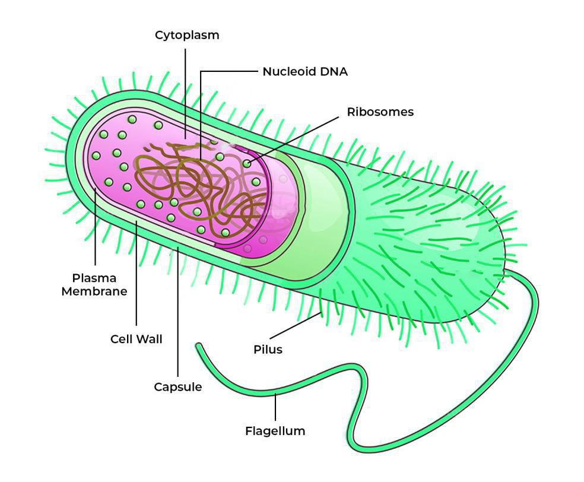
2.1 Morphology of bacterial cells
| Shape | Name | Example |
|---|---|---|
| Sphere | Coccus | Staphylococcus aureus |
| Rod | Bacillus (rod shape, not the genus) | E. coli |
| Short rod | Coccobacillus | Haemophilus influenzae |
| Comma | Vibrio | Vibrio cholerae |
| Rigid spiral | Spirillum | Campylobacter |
| Flexible spiral | Spirochete, moves by axial filaments | Treponema pallidum |
| Filament, branching | Mycelial | Streptomyces |
| Variable | Pleomorphic | Mycoplasma, which has no wall to hold a shape |
Arrangement follows the geometry of division. Cocci that divide in one plane and stay attached give diplococci and chains (strepto-); division in several planes gives grape-like clusters (staphylo-); packets of eight give sarcinae. Rods give diplobacilli, chains, or palisades. The arrangement is diagnostic because it reports how the division plane is placed, and the division plane is set by the cytoskeleton.
Shape is genetically determined and maintained against turgor pressure by the peptidoglycan sacculus. Remove the wall with lysozyme in an isotonic medium and a rod becomes a sphere (a protoplast), which shows that the wall, not the membrane, holds the form.
2.2 The cytoplasm
Bacterial cytoplasm is crowded, roughly 300 to 400 mg of macromolecule per millilitre, and it is organised without membranes.
| Component | Description | Function |
|---|---|---|
| Nucleoid | Supercoiled circular chromosome with NAPs (HU, H-NS, Fis, IHF), no envelope | Genome, compacted about a thousandfold, organised into macrodomains |
| Plasmids | Small circular replicons, 1 to several hundred kb, with their own origin | Accessory traits: resistance, virulence, degradation, conjugation |
| Ribosomes | 70S, 30S plus 50S, up to 70,000 per fast-growing cell | Translation; the target of many antibiotics |
| Carboxysome | Protein-shelled microcompartment holding rubisco and carbonic anhydrase | Concentrates CO2 for fixation in autotrophs |
| Magnetosome | Membrane-invaginated chain of magnetite crystals | Aligns the cell with the geomagnetic field |
| Gas vesicle | Protein-walled, gas filled, impermeable to water | Buoyancy control in aquatic cyanobacteria |
| Inclusion bodies | Granules of PHB, glycogen, polyphosphate or elemental sulfur | Carbon, phosphate or electron donor storage |
| Endospore | Dehydrated core, calcium dipicolinate, SASPs, cortex, coat | Dormant survival structure, not a reproductive spore |
2.3 The bacterial cytoskeleton
For decades bacteria were thought to have no cytoskeleton. They have homologues of all three eukaryotic filament classes, and these proteins place the division plane, maintain shape and segregate DNA.
| Protein | Eukaryotic counterpart | Role |
|---|---|---|
| FtsZ | Tubulin | Polymerises into the Z ring at midcell and recruits the divisome for septation |
| MreB | Actin | Helical filaments under the membrane that direct wall synthesis and maintain rod shape; absent in cocci |
| CreS (crescentin) | Intermediate filament | Gives Caulobacter crescentus its curve |
| ParA, ParM | Actin-like ATPase | Pushes or pulls plasmid and chromosome copies to opposite halves of the cell |
| MinCDE | None | Oscillating inhibitor that stops FtsZ assembling anywhere except midcell |
| Bactofilins | None | Stable polymers that anchor local wall synthesis, for example in stalks |
Division itself is binary fission: the chromosome is replicated bidirectionally from a single origin, the two copies are actively segregated, FtsZ marks midcell, the divisome builds septal peptidoglycan inward, and the cell splits into two roughly equal daughters. That symmetry distinguishes it from budding in yeast.
2.4 The cell envelope
The envelope is everything from the cytoplasm outward: plasma membrane, cell wall, and in Gram-negative cells a second membrane. It is the interface for nutrient uptake, secretion, sensing and drug entry, so it is where most antibiotics act.
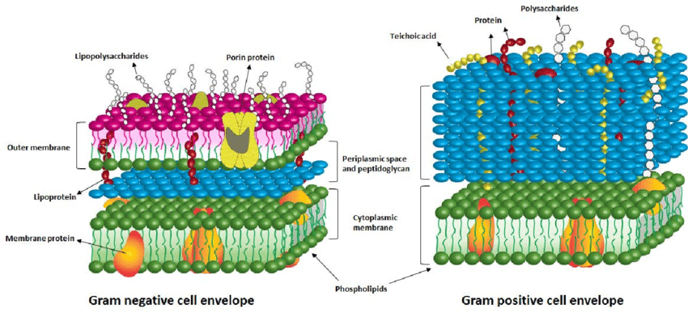
Peptidoglycan
The wall polymer is a mesh of glycan chains of alternating N-acetylglucosamine and N-acetylmuramic acid, joined by beta-1,4 bonds, with a short peptide stem on each NAM. Cross-links between stems make the whole sacculus one covalently bonded molecule. In E. coli the link is direct, from D-alanine to diaminopimelic acid; in S. aureus it runs through a pentaglycine bridge to lysine. D-amino acids appear here and almost nowhere else in biology, and they resist host proteases.
Gram-positive against Gram-negative
| Feature | Gram-positive | Gram-negative |
|---|---|---|
| Gram stain result | Purple, retains crystal violet | Pink, decolourised then counterstained by safranin |
| Peptidoglycan | Thick, 20 to 80 nm, many layers | Thin, 2 to 7 nm, one or a few layers |
| Outer membrane | Absent | Present, asymmetric, LPS on the outer face |
| Periplasm | Minimal | Distinct compartment with binding proteins and enzymes |
| Teichoic acids | Wall teichoic acid and lipoteichoic acid | Absent |
| Endotoxin | None | Lipid A of LPS |
| Porins | Not needed | OmpF, OmpC and others gate small hydrophilic solutes |
| Sensitivity to lysozyme and penicillin | Generally high | Lower, the outer membrane excludes many drugs |
| Secretion systems | Sec, Tat, T7SS | T1SS to T6SS, including injectisomes |
The Gram stain works on that architecture. Crystal violet and iodine form a large complex in the cytoplasm; the alcohol decolouriser dehydrates and shrinks thick peptidoglycan so the complex is trapped, while it dissolves the outer membrane of a Gram-negative cell and lets the complex wash out. Old cultures give false negatives as the wall degrades, so the stain is run on fresh growth.
Lipopolysaccharide
LPS has three parts. Lipid A anchors it in the outer membrane and is the endotoxin. The core polysaccharide is conserved. The O antigen is a repeating sugar chain that is highly variable and is used for serotyping, as in E. coli O157:H7. LPS is stabilised by Mg2+ and Ca2+ bridges, which is why EDTA and polymyxins destabilise the outer membrane.
Walls that do not fit the pattern
| Group | Envelope | Consequence |
|---|---|---|
| Mycobacteria, Nocardia | Peptidoglycan plus arabinogalactan plus a mycolic acid layer | Acid-fast staining (Ziehl-Neelsen), waxy surface, slow growth, resistant to drying and many drugs |
| Mycoplasma | No wall, sterols in the membrane | Pleomorphic, penicillin resistant, osmotically fragile |
| Archaea | Pseudomurein or S-layer only | Insensitive to lysozyme and beta-lactams |
| Many bacteria and archaea | S-layer of self-assembling protein subunits | Outermost armour, resists phagocytosis and low pH |
2.5 The bacterial cell surface
| Structure | Composition | Function |
|---|---|---|
| Capsule | Organised polysaccharide, firmly attached | Blocks phagocytosis, prevents desiccation, mediates attachment; the basis of conjugate vaccines |
| Slime layer | Loose, diffuse polysaccharide | Adhesion and biofilm matrix |
| Fimbriae | Short pilin filaments, many per cell | Attachment to host tissue; a major virulence factor |
| Conjugative (sex) pilus | F pilus, one or a few per cell | Contacts a recipient and draws the cells together for DNA transfer |
| Type IV pilus | Retractable pilin polymer | Twitching motility, DNA uptake during natural transformation, adhesion |
| Flagellum | Filament of flagellin, hook, basal body motor | Swimming motility, driven by proton-motive force |
| Axial filament | Internal endoflagella between membrane and wall | Corkscrew motility of spirochetes through viscous media |
The flagellum is a rotary motor, not a whip. Stator units (MotA and MotB) conduct protons across the membrane and turn the rotor at up to 100,000 rpm; the filament acts as a rigid helical propeller. Reversing the direction of rotation switches a smooth run into a tumble, which is the mechanical basis of chemotaxis in Topic 8.7. Arrangements are named: monotrichous (one pole), lophotrichous (a tuft at one pole), amphitrichous (both poles) and peritrichous (all over, as in E. coli).
Note that the H antigen of a serotype is flagellar protein, the O antigen is LPS sugar, and the K antigen is capsular. That is the whole logic of a name such as O157:H7.
2.6 Diversity of bacteria
Bacterial taxonomy is built on genome sequence, with 16S rRNA identity as the working proxy: roughly 97 per cent identity for a species-level grouping, though average nucleotide identity above about 95 per cent across whole genomes is the modern criterion. Phenotype (Gram reaction, oxygen tolerance, metabolism) still drives clinical identification because it is fast.
| Phylum | Character | Representatives |
|---|---|---|
| Proteobacteria | Gram-negative, metabolically enormous range, five classes | E. coli, Pseudomonas, Rhizobium, Helicobacter |
| Firmicutes | Gram-positive, low GC, many spore formers | Bacillus, Clostridium, Staphylococcus, Lactobacillus |
| Actinobacteria | Gram-positive, high GC, filamentous growth | Streptomyces, Mycobacterium, Corynebacterium |
| Cyanobacteria | Oxygenic photosynthesis, thylakoids, many fix N2 | Anabaena, Synechocystis, Prochlorococcus |
| Bacteroidetes | Anaerobic fermenters, dominant in the gut | Bacteroides, Prevotella |
| Spirochaetes | Spiral, axial filaments | Treponema, Borrelia, Leptospira |
| Chlamydiae | Obligate intracellular, biphasic life cycle | Chlamydia trachomatis |
| Planctomycetes | Compartmentalised cells, budding, anammox | Brocadia, Gemmata |
| Deinococcus-Thermus | Extreme radiation and heat resistance | Deinococcus radiodurans, Thermus aquaticus |
| Chloroflexi, Chlorobi | Anoxygenic photosynthesis, green bacteria | Chlorobium, Chloroflexus |
Candidate phyla radiation and other uncultured lineages, found only as metagenome-assembled genomes, now make up more of the tree than the cultured groups do. Group by group detail sits in Topic 7.
Back to topTopic 3: archaea
Archaea were separated from bacteria in 1977 on rRNA sequence, and every discovery since has widened the gap. They are prokaryotic in cell plan, bacterial in bioenergetics, eukaryotic in how they handle information, and chemically unique in their membranes.
4.1 Evolution of archaea
Woese and Fox noticed that methanogen 16S rRNA sequences were as different from E. coli as from yeast. Since ribosomal RNA is universal and functionally constant, that difference had to be ancient, and it justified a third domain rather than a subdivision of bacteria. Later work split archaeal genes into two classes and made the picture sharper: informational genes (replication, transcription, translation) group archaea with eukaryotes, while operational genes (metabolism, transport, biosynthesis) group them with bacteria.
| Archaeal feature | Resembles |
|---|---|
| Histones and nucleosome-like packing | Eukarya |
| Multi-subunit RNA polymerase with TBP and TFB | Eukarya |
| Origin recognition and MCM helicase, family B polymerases | Eukarya |
| Ribosome sensitivity profile and elongation factors | Eukarya |
| Operons and polycistronic mRNA | Bacteria |
| Chemiosmotic energy conservation, ATP synthase in a plasma membrane | Bacteria |
| Single circular chromosome, no nucleus | Bacteria |
| Ether-linked isoprenoid lipids on glycerol-1-phosphate | Neither, unique to archaea |
Named superphyla worth recognising: TACK (Thaumarchaeota, Aigarchaeota, Crenarchaeota, Korarchaeota), Euryarchaeota, DPANN (small genomes, mostly symbionts), and Asgard.
4.2 Archaeal cell structure
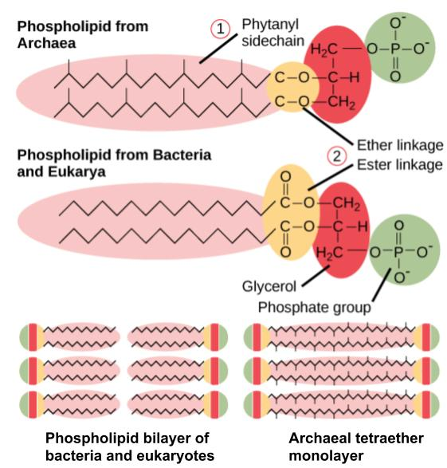
The membrane is the defining difference. Bacterial and eukaryotic lipids are straight-chain fatty acids joined to glycerol-3-phosphate by ester bonds. Archaeal lipids are branched isoprenoid chains joined to glycerol-1-phosphate (the opposite stereoisomer) by ether bonds. Ether bonds resist hydrolysis at high temperature and low pH, and methyl branches restrict the packing of the chains. In hyperthermophiles the chains of the two leaflets are fused into a single tetraether span, so the membrane is a monolayer that cannot be pulled apart by heat.
| Structure | Detail |
|---|---|
| Cell wall | No true peptidoglycan. Methanobacterium has pseudomurein (NAG plus N-acetyltalosaminuronic acid, beta-1,3 links, L-amino acids); many others have only a paracrystalline S-layer; Methanosarcina has methanochondroitin; Thermoplasma has no wall at all |
| Motility | The archaellum: superficially like a flagellum, but built from type IV pilus components, ATP driven rather than proton driven, and assembled from the base |
| Chromosome | Circular, packed with histones in most lineages, replicated from one to three origins |
| Division | FtsZ in Euryarchaeota, but Crenarchaeota use the Cdv system, which is homologous to eukaryotic ESCRT-III |
| Ribosome | 70S, insensitive to streptomycin and chloramphenicol, sensitive to anisomycin and diphtheria toxin |
| Metabolic hardware | Bacterial-style electron transport and A-type ATP synthase; unique cofactors such as F420, coenzyme M and methanofuran in methanogens |
4.3 Diversity of archaea
| Group | Physiology | Habitat and examples |
|---|---|---|
| Methanogens (Euryarchaeota) | Strictly anaerobic, reduce CO2, acetate or methyl compounds to CH4; the only methane producers in biology | Rumen, wetlands, anaerobic digesters, gut. Methanobrevibacter smithii, Methanocaldococcus jannaschii |
| Extreme halophiles | Need 2 to 5 M NaCl, accumulate KCl to balance it, use bacteriorhodopsin for light-driven proton pumping | Salt lakes, salterns. Halobacterium salinarum |
| Hyperthermophiles (Crenarchaeota) | Optimum above 80 °C, often sulfur based chemolithotrophs | Hot springs, hydrothermal vents. Sulfolobus, Pyrococcus furiosus, Pyrolobus fumarii at 113 °C |
| Thermoacidophiles | Hot and pH below 2 at the same time | Picrophilus torridus grows at pH 0, Thermoplasma in coal refuse |
| Thaumarchaeota | Ammonia-oxidising archaea, autotrophic, very high affinity for ammonia | Ocean water column and soil; among the most abundant cells on Earth |
| ANME groups | Anaerobic oxidation of methane, usually syntrophic with sulfate reducers | Marine sediments, methane seeps; a major global methane sink |
| Nanoarchaeota and DPANN | Tiny genomes, obligate symbionts or parasites of other archaea | Nanoarchaeum equitans on Ignicoccus |
| Asgard archaea | Uncultured until recently, carry eukaryotic signature proteins | Marine sediment; central to the origin of eukaryotes |
Archaea are not confined to extremes. That was an artefact of where people first looked, using cultivation methods that suited thermophiles. Culture-independent sequencing found Thaumarchaeota throughout the open ocean and soil, and methanogens in every anaerobic environment including the human gut.
Back to topTopic 4: eukaryotic microorganisms
Eukaryotic microbes are fungi, protozoa, algae and slime moulds. They are not a natural group; they are the eukaryotes that happen to be microscopic, and they are scattered across the whole eukaryotic tree. Most of the fundamental cell biology in this topic was worked out in yeast.
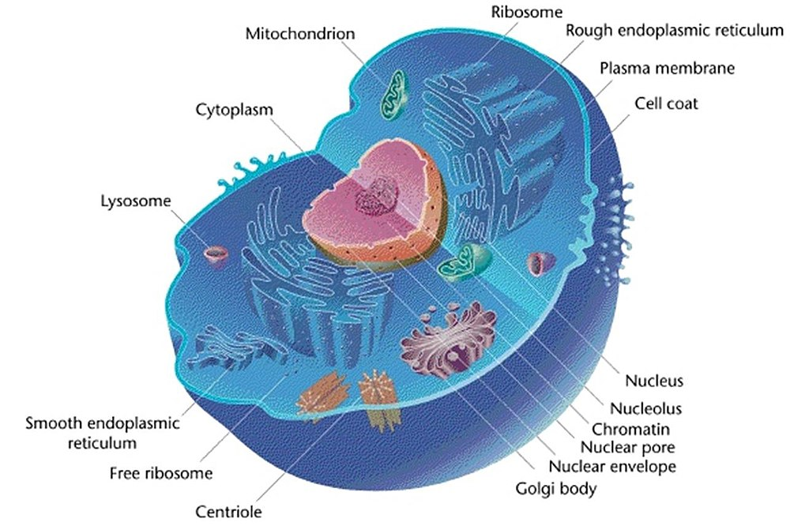
3.1 The morphology of typical eukaryal cells
| Structure | Detail | Function |
|---|---|---|
| Nucleus | Double membrane pierced by nuclear pore complexes, continuous with the ER | Separates transcription from translation, which allows RNA processing and splicing |
| Nucleolus | Dense non-membrane region | rRNA transcription and ribosome subunit assembly |
| Endoplasmic reticulum | Rough with ribosomes, smooth without | Protein folding and glycosylation; lipid synthesis and detoxification |
| Golgi | Stacked cisternae, cis to trans | Modification, sorting and shipping of proteins |
| Mitochondrion | Double membrane, cristae, own circular DNA, 70S ribosomes | Oxidative phosphorylation |
| Hydrogenosome | Mitochondrion-derived, no cristae or DNA, makes H2 | Anaerobic ATP production in Trichomonas |
| Mitosome | Highly reduced mitochondrial remnant | Iron-sulfur cluster assembly only, in Giardia and microsporidia |
| Chloroplast | Double membrane plus thylakoids, own genome | Photosynthesis in algae |
| Vacuole, lysosome | Acidified by a V-type ATPase | Digestion, storage, turgor, pH homeostasis |
| Cytoskeleton | Actin, tubulin, intermediate filaments | Shape, cytokinesis, motility, vesicle traffic, mitotic spindle |
| Flagella and cilia | 9+2 axoneme of microtubules, dynein driven, bends rather than rotates | Swimming and feeding currents |
| Cell wall or surface layer | Chitin in fungi, cellulose in green algae, silica in diatoms, calcium carbonate in coccolithophores, pellicle in ciliates | Support and protection |
| Ribosome | 80S, 40S plus 60S | Translation; sensitive to cycloheximide, not to most antibacterials |
3.2 Diversity of eukaryal microbes
The old kingdom Protista has been abandoned. Eukaryotes are now organised into a handful of supergroups defined by molecular phylogeny, and microbial forms appear in all of them.
| Supergroup | Microbial members | Notes |
|---|---|---|
| Opisthokonta | Fungi, microsporidia, choanoflagellates | Single posterior flagellum ancestrally; sister group to animals |
| Amoebozoa | Entamoeba, Acanthamoeba, Dictyostelium, slime moulds | Move and feed by pseudopodia |
| Excavata | Giardia, Trichomonas, Trypanosoma, Leishmania, Euglena | Feeding groove; several have reduced mitochondria and a kinetoplast |
| SAR: Stramenopiles | Diatoms, brown algae, Phytophthora and other oomycetes | Diatoms fix a large share of global carbon; oomycetes are fungus-like plant pathogens |
| SAR: Alveolates | Plasmodium, Toxoplasma, ciliates such as Paramecium, dinoflagellates | Cortical alveoli; apicomplexans are all parasites and carry an apicoplast |
| SAR: Rhizaria | Foraminifera, radiolarians | Thin pseudopodia and mineral shells; major fossil record |
| Archaeplastida | Green algae (Chlamydomonas, Volvox), red algae | Primary plastid; the lineage that led to land plants |
Fungi
| Phylum | Character | Examples |
|---|---|---|
| Chytridiomycota | Flagellated zoospores, aquatic | Batrachochytrium, which is killing amphibians worldwide |
| Zygomycota | Coenocytic hyphae, zygospores | Rhizopus bread mould |
| Glomeromycota | Obligate arbuscular mycorrhizal symbionts | Glomus |
| Ascomycota | Sexual spores in a sac (ascus); the largest phylum | Saccharomyces, Aspergillus, Penicillium, Neurospora, Candida |
| Basidiomycota | Spores on a basidium; mushrooms, rusts, smuts | Agaricus, Cryptococcus, Ustilago |
Fungal vocabulary is worth fixing. A hypha is one filament; septate hyphae have cross walls, coenocytic hyphae do not. A mycelium is a mass of hyphae. A yeast is a single-celled fungus; a mould grows as hyphae; a dimorphic fungus switches between the two with temperature, which matters clinically because Histoplasma and Blastomyces are moulds in soil at 25 °C and yeasts in tissue at 37 °C. Fungi are absorptive heterotrophs: they secrete hydrolases and take up the products, which makes them the main decomposers of lignin and cellulose.
Protozoa and algae
Protozoa are grouped informally by locomotion: flagellates (Trypanosoma, Giardia), amoebae (Entamoeba), ciliates (Paramecium, Balantidium) and apicomplexans, which are non-motile as adults and all parasitic. Algae are grouped by pigment and storage product: green algae store starch and use chlorophyll a and b, red algae use phycobilins, diatoms and brown algae use chlorophyll c and fucoxanthin. Marine phytoplankton, mostly diatoms, dinoflagellates and cyanobacteria, carry out about half of all photosynthesis on Earth.
3.3 Replication of eukaryal microbes
| Mode | Description | Example |
|---|---|---|
| Binary fission | Symmetrical mitotic division | Schizosaccharomyces pombe, amoebae |
| Budding | Asymmetric: a small daughter grows from the mother and separates, leaving a bud scar | Saccharomyces cerevisiae |
| Multiple fission (schizogony) | Repeated nuclear division then simultaneous cytokinesis into many progeny | Plasmodium in liver and red blood cells |
| Sporulation, asexual | Mitotic conidia or sporangiospores dispersed by air | Aspergillus, Penicillium |
| Sporulation, sexual | Plasmogamy, karyogamy, then meiosis to give ascospores or basidiospores | Neurospora, mushrooms |
| Alternation of generations | Haploid and diploid multicellular phases alternate | Ulva, many algae |
| Conjugation (ciliate) | Two cells exchange haploid micronuclei; genetic exchange without reproduction | Paramecium |
Mitosis conserves chromosome number and produces genetically identical nuclei; meiosis halves it and generates diversity by independent assortment and crossing over. Yeast is a convenient genetic system precisely because it can be held as a stable haploid, mated to give a diploid, and then forced into meiosis by starvation, so all four products of a single meiosis can be recovered and scored.
The malaria life cycle is the standard example of a multi-stage parasite: sporozoites from mosquito saliva infect liver cells, merozoites are released and invade erythrocytes, some develop into gametocytes, and gametes fuse in the mosquito midgut where the only meiosis in the cycle takes place. The mosquito is therefore the definitive host and the human the intermediate host.
3.4 The origin of eukaryal cells
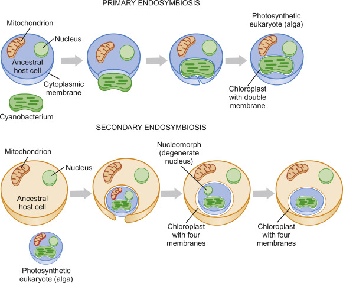
Lynn Margulis revived and established the endosymbiotic theory. The evidence for it is consistent across several independent lines.
| Observation | What it implies |
|---|---|
| Two membranes, the inner one bacterial in lipid composition | The inner membrane was the symbiont's, the outer one the host vesicle |
| Circular genome with bacterial gene arrangement | Descent from a free-living prokaryote |
| 70S ribosomes, formylmethionine start, sensitivity to chloramphenicol | Bacterial translation machinery retained |
| Division by fission, independent of host mitosis | Autonomous replication |
| Mitochondrial rRNA groups with Alphaproteobacteria; plastid rRNA with Cyanobacteria | Identifies the actual ancestors |
| Most organelle genes now live in the nucleus | Endosymbiotic gene transfer over evolutionary time |
Primary endosymbiosis produced mitochondria in the ancestor of all eukaryotes and plastids in the ancestor of Archaeplastida. Secondary endosymbiosis, in which a eukaryote engulfed an already photosynthetic eukaryote, explains the three or four membranes around the plastids of diatoms, dinoflagellates and euglenids, and the vestigial nucleus (nucleomorph) still present in cryptophytes. The apicoplast of Plasmodium is a non-photosynthetic relic of that process, and it is a useful drug target for exactly that reason.
The rest of the cell is less settled. The autogenous model derives the nucleus and endomembrane system from infolding of the plasma membrane. The hydrogen hypothesis proposes a metabolic partnership in which a methanogenic archaeon depended on H2 from a bacterium that became the mitochondrion. Asgard archaeal genomes support the second family of models, since they already contain actin, ESCRT and membrane-trafficking machinery. Whether mitochondria came early (and drove eukaryogenesis) or late remains the open question; the last eukaryotic common ancestor already had them.
3.5 Interactions with animals, plants and the environment
| Interaction | Partners | Outcome |
|---|---|---|
| Mycorrhiza | Fungus and plant root | Fungus supplies phosphate and water, plant supplies sugar; about 80 per cent of land plants depend on it |
| Lichen | Fungus plus alga or cyanobacterium | Colonises bare rock; the photobiont fixes carbon, the mycobiont supplies structure and water |
| Rumen community | Anaerobic fungi, protozoa, bacteria, methanogens | Digests cellulose into volatile fatty acids the host can absorb |
| Endophyte | Fungus inside plant tissue | Often protective, producing alkaloids that deter herbivores |
| Leaf-cutter ant fungus garden | Ant, fungus, and antibiotic-producing actinobacteria | Farmed fungus digests leaves for the ants |
| Coral symbiosis | Coral and dinoflagellate Symbiodinium | Photosynthate feeds the coral; bleaching is loss of the symbiont under heat stress |
| Decomposition | Fungi in soil and litter | The main route by which lignin and cellulose return to CO2 |
| Harmful algal bloom | Dinoflagellates, some diatoms | Saxitoxin and domoic acid accumulate in shellfish; anoxia as the bloom decays |
| Disease group | Agent | Feature |
|---|---|---|
| Superficial mycosis | Trichophyton, Malassezia | Skin, hair and nail only, as in ringworm and athlete's foot |
| Systemic mycosis | Histoplasma, Coccidioides, Blastomyces | Inhaled from soil, dimorphic, can infect healthy hosts |
| Opportunistic mycosis | Candida albicans, Aspergillus fumigatus, Pneumocystis jirovecii, Cryptococcus neoformans | Requires immune compromise; the main cause of fungal mortality |
| Protozoan disease | Plasmodium, Trypanosoma, Leishmania, Giardia, Entamoeba, Toxoplasma | Vector-borne or waterborne; malaria alone causes hundreds of thousands of deaths a year |
| Plant pathogens | Phytophthora infestans, Magnaporthe oryzae, rusts and smuts | Potato blight and rice blast; historically the cause of famine |
| Mycotoxins | Aspergillus flavus aflatoxin, Claviceps purpurea ergot | Poisoning and carcinogenesis through contaminated grain |
The same organisms are industrially indispensable: S. cerevisiae for bread, beer, wine and recombinant protein, Aspergillus for citric acid and soy fermentation, Penicillium for penicillin and cheese, and algae for agar, carrageenan and biofuel feedstock.
Back to topTopic 5: viruses
A virus is an obligate intracellular parasite made of a nucleic acid genome in a protein coat. It has no ribosomes, no metabolism and no way to make ATP, so outside a host it is an inert particle. Viruses are the most abundant biological entities on the planet, at roughly 1031 particles, and they kill an estimated 20 per cent of ocean microbial biomass every day.
5.1 A basic overview of viruses
| Part | Description |
|---|---|
| Genome | DNA or RNA, single or double stranded, linear or circular, one segment or many. Never both DNA and RNA in the same particle |
| Capsid | Protein shell of repeating capsomeres; icosahedral, helical or complex |
| Nucleocapsid | Capsid plus enclosed genome |
| Envelope | Host-derived lipid bilayer acquired by budding, studded with viral glycoprotein spikes; makes the particle sensitive to detergents, alcohol and drying |
| Matrix protein | Layer between envelope and nucleocapsid that drives assembly and budding |
| Packaged enzymes | Reverse transcriptase, RNA-dependent RNA polymerase, integrase, neuraminidase as required by the replication strategy |
The replication cycle
- Attachment. A capsid or spike protein binds a specific host surface receptor. That interaction sets host range and tissue tropism: HIV gp120 binds CD4 plus CCR5, influenza haemagglutinin binds sialic acid, phage tail fibres bind LPS or outer membrane protein.
- Entry and uncoating. Phages inject the genome and leave the capsid outside. Animal viruses enter by fusion at the membrane or by receptor-mediated endocytosis and then escape the endosome, often triggered by its acidification.
- Synthesis. Early genes redirect host metabolism, the genome is replicated, and late genes make structural proteins. The route depends entirely on the Baltimore class.
- Assembly. Capsids self-assemble around the genome, often with scaffolding proteins that are then removed.
- Release. Lysis for naked viruses and most phages, budding for enveloped viruses, which lets the cell survive and shed for a long period.
| Phage strategy | What happens | Consequence |
|---|---|---|
| Lytic (virulent) | Immediate replication, then lysis | Plaques on a lawn; phage T4 |
| Lysogenic (temperate) | Genome integrates as a prophage and is replicated with the chromosome, repressed by cI | Latency, immunity to superinfection, and lysogenic conversion; phage lambda |
| Chronic release | Continuous extrusion without killing the cell | Filamentous phage M13, used in phage display |
| Induction | DNA damage activates RecA, which triggers cleavage of the repressor and entry into the lytic cycle | UV or mitomycin C induces prophages |
Lysogenic conversion matters clinically: the prophage brings genes with it. Diphtheria toxin, cholera toxin, botulinum toxin, and the Shiga toxin of E. coli O157:H7 are all phage encoded, so a harmless strain becomes a pathogen by being infected.
5.2 Origins of viruses
| Hypothesis | Claim | Support and problems |
|---|---|---|
| Regressive (degeneracy) | Viruses are cells that lost everything except replication | Fits giant viruses and obligate intracellular bacteria as an analogy; does not explain capsid proteins with no cellular homologue |
| Escaped gene (vagrancy) | Viruses are host nucleic acids that gained autonomy | Fits retroviruses and their relationship to retrotransposons; struggles to explain conserved capsid folds shared across domains |
| Virus-first (coevolution) | Viruses descend from replicating elements that predate cells | Fits an RNA world and the deep conservation of some capsid folds; hard to test, and viruses need cells now |
None of the three explains all viruses, and the current view is that different viral lineages arose by different routes and more than once. Giant viruses such as Mimivirus and Pandoravirus sharpened the argument: with genomes over 1 Mb, hundreds of genes and even some translation components, they blur the line between virus and cell.
5.3 Cultivation, purification and quantification of viruses
Viruses cannot be grown on agar alone; they need living cells.
| Method | Use |
|---|---|
| Bacterial lawn | Phage growth and plaque assay, the fastest and cheapest system |
| Cell culture monolayer | Animal viruses; primary, diploid or continuous (immortal) cell lines. Cytopathic effect signals infection |
| Embryonated hen's egg | Influenza vaccine production; different membranes suit different viruses |
| Whole animal or plant | Viruses with no culture system, and pathogenesis studies |
| Organoid or explant | Viruses needing differentiated tissue architecture |
Purification uses the physical properties of the particle: differential centrifugation to clear cell debris, then ultracentrifugation through a sucrose or caesium chloride gradient, where the particle bands at its own density (rate zonal separates by size, equilibrium by density). Precipitation with polyethylene glycol concentrates the preparation, and filtration through 0.22 µm removes bacteria while letting the virus through, which is how virus was first defined.
| Assay | Measures | Notes |
|---|---|---|
| Plaque assay | Infectious units, as plaque-forming units per millilitre | Each plaque comes from one infectious particle; counts only what can infect |
| TCID50 or endpoint dilution | Dilution infecting half the inoculated cultures | Used where plaques do not form |
| Haemagglutination assay | Total particles able to cross-link red blood cells | Fast and cheap, does not require infectivity |
| Electron microscopy count | Total physical particles | Gives the particle-to-PFU ratio, which is often 10 to 1000 to 1 |
| qPCR or RT-qPCR | Genome copies | Very sensitive; counts non-infectious genomes as well |
| Plaque reduction neutralisation | Antibody titre | The reference test for protective immunity |
5.4 Diversity of viruses
| Virus | Genome | Points to remember |
|---|---|---|
| Phage T4 | dsDNA, linear | Complex head and contractile tail, strictly lytic, classic genetics |
| Phage lambda | dsDNA, linear with cos ends | Temperate; the lysis/lysogeny switch is the model genetic circuit; cloning vector |
| Phage M13 | ssDNA, circular | Filamentous, chronic release, used for phage display and sequencing templates |
| Influenza A | Minus-sense ssRNA, 8 segments | Antigenic drift by point mutation, antigenic shift by reassortment of segments; HA and NA define the subtype |
| HIV-1 | Plus-sense ssRNA, retrovirus | Reverse transcriptase, integrase and protease are all drug targets; integrates as a provirus and stays latent |
| Herpes simplex | dsDNA, enveloped | Lifelong latency in neurons with periodic reactivation |
| SARS-CoV-2 | Plus-sense ssRNA, 30 kb | Largest RNA viral genomes; spike binds ACE2; has a proofreading exonuclease, unusual for RNA viruses |
| Poliovirus | Plus-sense ssRNA, naked | Genome acts directly as mRNA, translated as one polyprotein that is then cleaved |
| Rotavirus | dsRNA, 11 segments | Packages its own RNA polymerase because dsRNA cannot be read by the host |
| Tobacco mosaic virus | Plus-sense ssRNA | Helical capsid; the first virus described and the first crystallised |
| Hepatitis B | dsDNA with an RT step | Baltimore class VII, replicates through an RNA intermediate |
| Archaeal viruses | Mostly dsDNA | Spindle, bottle and droplet shapes with no counterparts elsewhere |
RNA viruses mutate about 104 times faster than DNA viruses, because RNA-dependent RNA polymerases have no proofreading. That gives quasispecies populations, rapid drug resistance, frequent host jumps, and vaccines that must be reformulated. Segmented genomes add reassortment, the mechanism behind pandemic influenza strains.
5.5 Virus-like particles
| Entity | What it is | Significance |
|---|---|---|
| Virus-like particle (VLP) | Capsid proteins assembled with no genome inside | Cannot replicate, so it is a safe vaccine platform: HPV and hepatitis B vaccines are VLPs |
| Viroid | Small circular naked RNA, 250 to 400 nt, encoding no protein | Plant pathogens such as potato spindle tuber viroid; replicated by host polymerase, some are ribozymes |
| Satellite virus or RNA | Needs a co-infecting helper virus to replicate | Hepatitis delta depends on hepatitis B for its envelope, and worsens the disease |
| Defective interfering particle | Deletion mutant that competes with intact virus for machinery | Lowers yield and can moderate the course of infection |
| Prion | Misfolded host protein, no nucleic acid at all | PrPSc templates conversion of normal PrPC; causes CJD, scrapie and BSE; resists autoclaving and proteases |
| Gene therapy vector | Virus stripped of replication genes, carrying a therapeutic gene | Adeno-associated virus and lentiviral vectors in approved therapies |
| Phage display library | Peptides fused to a phage coat protein | Selects binders from billions of variants; the route to several antibody drugs |
5.6 Virology today
The field now runs in several directions at once.
- Emerging and zoonotic viruses. Most new human viruses come from animals: influenza from birds and pigs, coronaviruses from bats, Ebola from bats, HIV from primates. Surveillance focuses on spillover interfaces.
- Antivirals. Targets are the steps that have no host counterpart: entry inhibitors, nucleoside analogues, protease and polymerase inhibitors, integrase inhibitors. Combination therapy is standard because single drugs select resistance quickly.
- Vaccines. Inactivated, live attenuated, subunit, VLP, viral vector and mRNA platforms, the last of which moved from concept to deployment in a year.
- Phage therapy. Being revisited for multidrug-resistant infections, with the advantages of narrow host range and self-amplification, and the difficulties of resistance and regulation.
- Oncolytic viruses. Engineered to replicate in tumour cells and provoke an immune response against them.
- Tools from viruses. CRISPR-Cas is a bacterial defence against phage, repurposed for genome editing; restriction enzymes come from the same arms race; reverse transcriptase and RNA polymerases in every molecular biology kit are viral.
- Virome discovery. Metagenomic sequencing of seawater, soil and faeces finds far more viral diversity than culture ever did, and most of it has no cultured host.
Topic 6: cultivation and control of growth
Growth in microbiology means an increase in the number of cells, not in the size of one cell. A culture doubles at a constant rate under fixed conditions, so populations are described exponentially and the whole subject of cultivation is about which conditions set that rate.
7.1 Factors affecting microbial growth
Temperature
Every organism has a minimum, an optimum and a maximum. The optimum sits close to the maximum because the rate of enzyme reactions rises with temperature until proteins begin to denature, at which point growth stops abruptly rather than tapering off.
| Class | Range | Optimum | Example |
|---|---|---|---|
| Psychrophile | -5 to 20 °C | ~15 °C | Polaromonas, polar sea ice organisms |
| Psychrotroph | 0 to 35 °C | 20 to 30 °C | Listeria monocytogenes, which is why it grows in a fridge |
| Mesophile | 15 to 45 °C | 30 to 40 °C | E. coli, and nearly all pathogens at 37 °C |
| Thermophile | 40 to 75 °C | 50 to 65 °C | Thermus aquaticus, compost organisms |
| Hyperthermophile | 65 to 113 °C | above 80 °C | Pyrococcus, Pyrolobus fumarii |
Adaptations follow the range. Psychrophiles have more unsaturated membrane lipids to stay fluid in the cold and enzymes with flexible active sites. Thermophiles use more ionic bonds and hydrophobic core packing in their proteins, saturated or ether-linked lipids, and chaperones; hyperthermophilic archaea use tetraether monolayers.
pH
| Class | Range | Example |
|---|---|---|
| Acidophile | pH 0 to 5.5 | Picrophilus at pH 0, Acidithiobacillus in mine drainage |
| Neutrophile | pH 5.5 to 8 | Most bacteria, including all common pathogens |
| Alkaliphile | pH 8.5 to 11.5 | Bacillus alcalophilus in soda lakes |
Whatever the external pH, cytoplasmic pH is held near neutral by proton pumps and antiporters, because the cytoplasmic enzymes and the ribosome are neutrophilic in every organism. Helicobacter pylori survives the stomach by hydrolysing urea to ammonia, which buffers its immediate surroundings. Culture media are buffered with phosphate or peptides because fermentation acidifies them and stops growth long before the nutrients run out.
Water and solutes
Water availability is measured as water activity (aw), where pure water is 1.00. Most bacteria need above 0.98, Staphylococcus aureus tolerates 0.86, and xerophilic moulds grow down to 0.61. That is the principle behind preserving food with salt, sugar or drying.
| Class | Requirement | Example |
|---|---|---|
| Non-halophile | Below 1 per cent NaCl | E. coli |
| Halotolerant | Grows with or without added salt, up to about 10 per cent | S. aureus, which is why mannitol salt agar selects it |
| Halophile | Requires 3 to 15 per cent | Vibrio, marine organisms |
| Extreme halophile | Requires 15 to 30 per cent | Halobacterium |
Cells resist osmotic stress with compatible solutes: potassium ions, glycine betaine, proline, trehalose and, in extreme halophiles, molar KCl with enzymes that require it.
Oxygen
| Class | Relationship to O2 | Where it grows in a thioglycolate tube | Example |
|---|---|---|---|
| Obligate aerobe | Requires O2 as terminal acceptor | Top only | Mycobacterium tuberculosis, Pseudomonas |
| Obligate anaerobe | Killed by O2, lacks catalase and superoxide dismutase | Bottom only | Clostridium, Bacteroides, methanogens |
| Facultative anaerobe | Uses O2 when present, ferments or respires anaerobically when not | Throughout, densest at the top | E. coli, S. cerevisiae |
| Aerotolerant anaerobe | Ignores O2, ferments regardless | Evenly throughout | Lactobacillus |
| Microaerophile | Needs O2 but only at 2 to 10 per cent | A narrow band below the surface | Campylobacter jejuni, H. pylori |
Nutrients and other factors
Macronutrients are needed in bulk: carbon, oxygen, hydrogen, nitrogen, sulfur, phosphorus, potassium, magnesium, calcium and iron. Micronutrients such as zinc, manganese, molybdenum, cobalt, copper and nickel are cofactors. Growth factors are compounds an organism cannot make and must be given: amino acids, purines and pyrimidines, and vitamins. An organism requiring one is an auxotroph for it, and that requirement is the basis of both selection in genetics and identification in the clinic.
Pressure matters at depth: barophiles from ocean trenches grow only above about 400 atmospheres. Radiation, heavy metals and low nutrient concentration all shape which organisms grow, and oligotrophs adapted to nanomolar substrate are often killed by rich laboratory media, one reason so few environmental microbes have ever been cultured.
7.2 Growing microorganisms in the laboratory
| Medium type | Definition | Example and use |
|---|---|---|
| Chemically defined | Every component and concentration known | Glucose salts medium; needed for growth requirement and yield studies |
| Complex (undefined) | Contains digests of unknown composition | Nutrient broth, tryptic soy agar; peptone and yeast extract supply everything |
| Selective | Inhibits unwanted organisms | MacConkey agar (bile salts and crystal violet block Gram-positives), mannitol salt agar (7.5 per cent NaCl), Sabouraud agar at low pH for fungi |
| Differential | Distinguishes organisms by appearance | Blood agar for haemolysis patterns; MacConkey again, since lactose fermenters turn pink |
| Enrichment | Favours a minority organism until it dominates | Selenite broth for Salmonella; nitrogen-free medium to enrich for nitrogen fixers |
| Transport | Keeps a specimen viable without letting it multiply | Cary-Blair medium |
| Reducing | Contains thioglycolate or cysteine to remove O2 | Anaerobe culture |
Agar is the standard solidifying agent because it melts around 95 °C, sets around 40 °C, and almost no microbe can degrade it, so the surface stays intact while colonies grow. That is what makes a colony possible, and a colony is what makes a pure culture possible: streak plating, pour plating and spread plating all exist to separate single cells far enough apart that each founds a visible clone. Koch's laboratory established that logic, along with the Petri dish.
Anaerobes need oxygen excluded, using reducing media, anaerobic jars with a hydrogen and carbon dioxide generator plus a palladium catalyst, or a glove box. Obligate intracellular organisms (Chlamydia, Rickettsia, all viruses) need host cells rather than medium.
| Culture system | Behaviour | Use |
|---|---|---|
| Batch | Closed, nutrients deplete, waste accumulates, four-phase growth curve | Routine work |
| Fed-batch | Nutrient added without removing culture | Industrial fermentation to high cell density |
| Continuous (chemostat) | Open, fresh medium in and culture out at the same rate; growth rate is set by dilution rate and one limiting nutrient | Steady-state physiology, evolution experiments |
7.3 Measuring microbial population growth
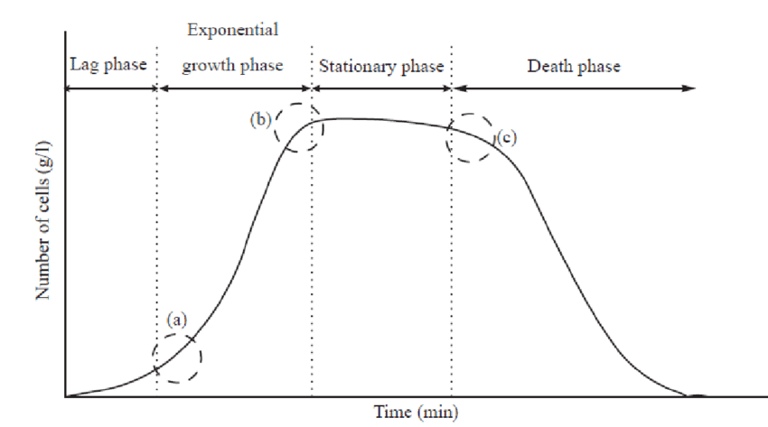
| Phase | What the cells are doing |
|---|---|
| Lag | No division. Cells synthesise enzymes, ribosomes and cofactors for the new medium. Length depends on inoculum age and how different the new conditions are |
| Exponential (log) | Constant doubling time, balanced growth, most uniform physiology; the phase used for experiments and the phase in which cells are most sensitive to antibiotics |
| Stationary | Division equals death. A nutrient is exhausted or waste has accumulated. Cells shrink, toughen, express stress sigma factors, and make secondary metabolites including most antibiotics |
| Death (decline) | Exponential loss of viability, though a resistant subpopulation can persist |
| Method | Counts | Strengths and limits |
|---|---|---|
| Viable plate count | Colony-forming units per millilitre | The standard for live cells. Needs 30 to 300 colonies per plate to be statistically sound; clumps count as one; misses cells that will not grow on that medium |
| Direct microscopic count | Total cells, in a haemocytometer or Petroff-Hausser chamber | Fast, no incubation, but cannot separate live from dead without a stain and needs about 106 cells per millilitre |
| Turbidity (OD600) | Light scattering, a proxy for biomass | Non-destructive and continuous; must be calibrated against plate counts, and dead cells still scatter |
| Dry weight | Biomass | Best for filamentous fungi, where counting cells is meaningless |
| Most probable number | Statistical estimate from replicate dilution tubes | Used for water testing when counts are very low |
| Membrane filtration | Cells in a large low-count volume | Filter, then place on medium; the standard for coliforms in drinking water |
| Flow cytometry | Individual cells, with viability and fluorescence markers | Fast and quantitative, needs instrumentation |
| qPCR or ATP assay | Genome copies or metabolic activity | Culture independent; does not distinguish live from recently dead |
Plate counts and total counts disagree systematically. Many environmental cells are viable but non-culturable: alive, metabolising and capable of causing infection, but unable to form a colony on standard media. That gap, sometimes called the great plate count anomaly, is the reason culture-independent methods in Topic 10 took over environmental microbiology.
7.4 Eliminating microbes and preventing their growth
| Term | Meaning |
|---|---|
| Sterilisation | Killing or removing all life, endospores included |
| Disinfection | Killing or removing pathogens from inanimate surfaces; spores may survive |
| Antisepsis | The same, applied to living tissue |
| Sanitisation | Reducing numbers to a level judged safe by public health standards |
| Degerming | Mechanical removal, such as washing before an injection |
| -cidal against -static | Kills against merely stops growth; a bacteriostatic agent needs a working immune system to finish the job |
| Method | Conditions | Mechanism and use |
|---|---|---|
| Autoclave (moist heat under pressure) | 121 °C, 15 psi, 15 to 20 minutes | Denatures protein; the reference sterilisation method. Spore strips of Geobacillus stearothermophilus verify it |
| Dry heat, incineration | 170 °C for 2 hours, or flame | Oxidation; for glassware and loops. Less efficient than moist heat, so it needs more time and temperature |
| Boiling | 100 °C, 10 minutes | Disinfects, does not sterilise, because endospores survive |
| Pasteurisation | 63 °C for 30 min, or 72 °C for 15 s (HTST), or 140 °C for 3 s (UHT) | Reduces pathogens and spoilage organisms while preserving flavour; not sterilisation |
| Filtration | 0.22 µm membrane; HEPA for air | Physical removal for heat-labile liquids such as antibiotics, vitamins and media with serum. Does not stop most viruses |
| Ionising radiation | Gamma rays, electron beams | Breaks DNA directly and by radicals; sterilises plastics, sutures and some foods |
| Ultraviolet | 260 nm | Forms pyrimidine dimers. Surface and air only; no penetration |
| Cold and desiccation | Refrigeration, freezing, lyophilisation | Bacteriostatic. Used to preserve cultures, not to kill |
| High osmotic pressure | Salting, sugaring | Plasmolysis; food preservation |
| Ethylene oxide gas | Sealed chamber, hours | Alkylates protein and DNA; sterilises heat-sensitive equipment |
| Chemical agent | Target | Notes |
|---|---|---|
| Alcohols (60 to 80 per cent ethanol) | Denature protein, dissolve lipid | Need water to work, so absolute ethanol is weaker. No effect on spores |
| Chlorine, hypochlorite, chloramine | Oxidises protein | Water treatment and surfaces; inactivated by organic matter |
| Iodophors | Oxidises and iodinates protein | Skin antisepsis before surgery |
| Phenolics, chlorhexidine | Disrupt membranes and denature protein | Persist on surfaces and skin |
| Quaternary ammonium compounds | Cationic detergents that disrupt membranes | Low toxicity, but Pseudomonas tolerates them |
| Hydrogen peroxide, peracetic acid | Oxidising radicals | Sporicidal at high concentration; vaporised for room decontamination |
| Glutaraldehyde, formaldehyde | Alkylate protein and nucleic acid | Sterilise instruments given long contact; toxic |
| Heavy metals (silver, copper) | Bind sulfhydryl groups | Silver dressings and catheter coatings |
Antimicrobial drugs
| Target | Drug class | Note |
|---|---|---|
| Cell wall synthesis | Beta-lactams (penicillins, cephalosporins, carbapenems), vancomycin, bacitracin | Bactericidal, and selective because human cells have no peptidoglycan |
| Protein synthesis, 30S | Aminoglycosides, tetracyclines | Aminoglycosides cause misreading; tetracyclines block the A site |
| Protein synthesis, 50S | Macrolides, chloramphenicol, clindamycin, linezolid | Selective because host ribosomes are 80S, though mitochondrial ribosomes explain some toxicity |
| Nucleic acid synthesis | Fluoroquinolones (DNA gyrase), rifampicin (RNA polymerase) | Rifampicin resistance arises in one step, so it is given in combination |
| Folate pathway | Sulfonamides, trimethoprim | Sequential blockade of one pathway; synergistic together |
| Membrane integrity | Polymyxins, daptomycin | Last-resort drugs, with kidney toxicity |
| Mycobacterial targets | Isoniazid, ethambutol | Mycolic acid and arabinogalactan synthesis |
Susceptibility is measured as the minimum inhibitory concentration, the lowest concentration preventing visible growth, by broth microdilution or by the zone of inhibition in a Kirby-Bauer disc diffusion test. The minimum bactericidal concentration is the lowest that kills rather than inhibits. The therapeutic index compares the toxic dose with the effective dose, and a narrow index is why aminoglycosides need serum monitoring.
Resistance arises by mutation or by horizontal transfer and works through a few mechanisms: enzymatic destruction (beta-lactamases, including extended-spectrum and carbapenemase forms), target modification (methylated rRNA, altered penicillin binding protein 2a in MRSA), efflux pumps, reduced permeability through porin loss, and bypass pathways. Selection pressure from misuse in medicine and agriculture drives all of it, which is why stewardship, combination therapy and completing courses are part of the microbiology rather than an afterthought.
Back to topTopic 7: bacterial most valuable players
This topic is a set of groups worth knowing by name, physiology and why they matter. The pattern to learn for each one is the same: where it sits phylogenetically, how it gets energy and carbon, what it does that nothing else does, and which named genus to quote.
Proteobacteria
The largest and most metabolically varied bacterial phylum, all Gram-negative, divided into classes named by Greek letters. Alpha (Rhizobium, Rickettsia, Caulobacter, and the ancestor of mitochondria), Beta (Nitrosomonas, Neisseria, Burkholderia), Gamma (E. coli, Pseudomonas, Vibrio, Chromatium), Delta (myxobacteria, sulfate reducers) and Epsilon (Helicobacter, Campylobacter). Almost every physiology discussed elsewhere in the course has a proteobacterial example, which is why the phylum is the reference point for the rest of this topic.
Purple sulfur bacteria
| Property | Detail |
|---|---|
| Examples | Chromatium, Thiospirillum, Allochromatium (Gammaproteobacteria) |
| Metabolism | Anoxygenic photolithoautotrophy: light for energy, H2S as electron donor, CO2 as carbon source |
| Key point | One photosystem only, so electrons come from sulfide rather than water and no O2 is made. Sulfur is stored as globules inside the cell, unlike green sulfur bacteria which deposit it outside |
| Pigments | Bacteriochlorophyll a and b, absorbing in the near infrared, plus carotenoids that give the purple colour |
| Habitat | Illuminated anoxic zones: the sulfide-rich layer of stratified lakes, sediments, the Winogradsky column |
C1 eaters (methylotrophs and methanotrophs)
Organisms that grow on compounds with a single carbon atom and no carbon-carbon bond: methane, methanol, methylamine, formate. Methanotrophs are the subset that starts from methane, using methane monooxygenase to make methanol, then formaldehyde, which is assimilated by the serine or the ribulose monophosphate pathway. Methylococcus and Methylosinus are the standard examples, and they form the biological filter that oxidises most of the methane produced in sediments and landfill before it reaches the atmosphere. Methane monooxygenase also cooxidises chlorinated solvents such as trichloroethylene, which makes these organisms useful in bioremediation.
Nitrifiers
| Step | Reaction | Organism |
|---|---|---|
| Ammonia oxidation | NH3 to NO2-, via hydroxylamine, using ammonia monooxygenase | Nitrosomonas, Nitrosococcus; also ammonia-oxidising Thaumarchaeota |
| Nitrite oxidation | NO2- to NO3-, using nitrite oxidoreductase | Nitrobacter, Nitrospira |
| Complete nitrification | Both steps in one organism (comammox) | Some Nitrospira, discovered in 2015 |
Nitrifiers are obligate chemolithoautotrophs and aerobes. The energy yield per electron is small, so they grow slowly, which matters practically: a sewage treatment plant loses nitrification long before it loses carbon removal, and nitrifiers are the bottleneck when a system is upset. Nitrification also converts ammonium, which soil holds, into nitrate, which leaches, so it drives fertiliser loss and groundwater contamination.
Pseudomonads
| Property | Detail |
|---|---|
| Examples | Pseudomonas aeruginosa, P. fluorescens, P. putida |
| Character | Gram-negative straight rods, polar flagellum, strict aerobes that can also respire nitrate, oxidase positive, non-fermentative |
| Metabolic range | Extremely broad: over a hundred organic substrates, including aromatics and hydrocarbons. Central to bioremediation and to spoilage |
| Clinical importance | P. aeruginosa is an opportunist in burns, cystic fibrosis and ventilated patients. Pyocyanin gives blue-green pus, it forms tough biofilms, and it resists many antibiotics and disinfectants intrinsically through efflux and low permeability |
| Habitat | Soil, water, damp surfaces, including distilled water and disinfectant bottles |
Nitrogen fixers
Only prokaryotes fix nitrogen. Nitrogenase reduces N2 to two NH3, consuming 16 ATP and 8 electrons per molecule, and it is irreversibly inactivated by oxygen. Every fixer solves that contradiction somehow.
| Organism | Lifestyle | Oxygen strategy |
|---|---|---|
| Rhizobium, Bradyrhizobium | Symbiotic in legume root nodules, differentiating into bacteroids | Plant leghaemoglobin buffers O2 to a low steady concentration |
| Frankia | Symbiotic with alder and other woody plants (Actinobacteria) | Vesicles with thick lipid envelopes |
| Azotobacter | Free-living aerobe in soil | Respiratory protection: the highest respiration rate known consumes O2 before it reaches nitrogenase |
| Anabaena, Nostoc | Filamentous cyanobacteria | Heterocysts: differentiated cells that shut down photosystem II |
| Clostridium pasteurianum | Free-living anaerobe | Avoids oxygen entirely |
Enterics
| Property | Detail |
|---|---|
| Family | Enterobacteriaceae, Gammaproteobacteria |
| Shared traits | Gram-negative rods, facultative anaerobes, oxidase negative, catalase positive, ferment glucose, reduce nitrate, peritrichous flagella if motile |
| Members | Escherichia, Salmonella, Shigella, Klebsiella, Proteus, Enterobacter, Serratia, Yersinia |
| Identification | Lactose fermentation on MacConkey (pink for E. coli and Klebsiella, colourless for Salmonella and Shigella), the IMViC tests, H2S on TSI agar, urease for Proteus |
| Why they matter | Coliforms are the indicator organisms for faecal contamination of water. The group covers most gastrointestinal and urinary infections and carries much of the world's transmissible antibiotic resistance on its plasmids |
Deltaproteobacteria
Two very different lifestyles in one class. The sulfate reducers (Desulfovibrio, Desulfobacter) are strict anaerobes that use sulfate as terminal electron acceptor, producing H2S; they blacken sediments with iron sulfide, corrode steel pipelines, and dominate anaerobic marine carbon flow. The myxobacteria (Myxococcus xanthus, Bdellovibrio) are aerobic predators: Myxococcus glides in cooperative swarms, lyses other bacteria with secreted enzymes, and on starvation builds a multicellular fruiting body in which some cells become myxospores, which is the most complex developmental cycle in the bacteria. Bdellovibrio instead invades the periplasm of a Gram-negative prey cell and consumes it from inside.
Firmicutes, Gram-positive without spores
| Genus | Character | Significance |
|---|---|---|
| Staphylococcus | Clusters, catalase positive, salt tolerant, facultative | S. aureus causes abscesses, food poisoning and toxic shock; MRSA carries an altered penicillin binding protein |
| Streptococcus | Chains, catalase negative, classified by haemolysis and Lancefield group | S. pyogenes for pharyngitis and rheumatic fever, S. pneumoniae for pneumonia, S. mutans for dental caries |
| Lactobacillus, Lactococcus | Aerotolerant anaerobes, lactic acid fermenters, need rich media | Yoghurt, cheese, silage, sourdough; part of the vaginal and gut flora; homolactic against heterolactic fermentation |
| Enterococcus | Bile and salt tolerant gut organisms | Hospital infections; vancomycin-resistant strains are a major concern |
| Listeria | Psychrotroph, facultative intracellular, motile at 25 °C | Grows at refrigerator temperature, dangerous in pregnancy |
| Mycoplasma | No cell wall, sterols in membrane, smallest free-living cell | Atypical pneumonia; unaffected by beta-lactams. Classified within Firmicutes despite staining as neither |
Firmicutes, Gram-positive with spores
| Genus | Oxygen | Significance |
|---|---|---|
| Bacillus | Aerobic or facultative | B. subtilis is the Gram-positive model organism and a source of industrial enzymes; B. anthracis causes anthrax; B. cereus causes food poisoning from reheated rice; B. thuringiensis supplies the Bt insecticidal toxin |
| Clostridium | Obligate anaerobe | C. tetani and C. botulinum make the most potent toxins known, both blocking neurotransmission; C. perfringens causes gas gangrene; C. difficile causes antibiotic-associated colitis; C. acetobutylicum is used for solvent fermentation |
| Geobacillus | Thermophilic aerobe | Spores are the biological indicator for autoclave validation |
Sporulation in B. subtilis is the model for bacterial development: starvation triggers an asymmetric septum, the mother cell engulfs the forespore, and a cascade of sporulation-specific sigma factors (H, F, E, G, K) runs the programme compartment by compartment. Germination reverses it when nutrients return. The spore survives because of its dehydrated core, calcium dipicolinate, small acid-soluble proteins bound to the DNA, and a multilayer coat.
Actinobacteria, Gram-positive with high GC
| Genus | Character | Significance |
|---|---|---|
| Streptomyces | Filamentous mycelium, aerial hyphae with chains of conidia, large genome | Source of most clinically used antibiotics: streptomycin, tetracycline, erythromycin, vancomycin, chloramphenicol. Gives soil its smell through geosmin |
| Mycobacterium | Acid-fast, mycolic acid layer, very slow growth | M. tuberculosis requires months of multidrug therapy; M. leprae cannot be cultured at all |
| Corynebacterium | Club-shaped, palisade arrangement | C. diphtheriae makes a phage-encoded toxin that blocks elongation factor 2; C. glutamicum produces industrial glutamate and lysine |
| Bifidobacterium, Propionibacterium | Anaerobic fermenters | Infant gut flora and probiotics; Swiss cheese holes and flavour; Cutibacterium acnes on skin |
| Frankia | Filamentous nitrogen fixer | Symbiosis with non-legume woody plants |
Cyanobacteria
| Property | Detail |
|---|---|
| Metabolism | Oxygenic photosynthesis with two photosystems, chlorophyll a, phycobilisomes, and thylakoid membranes inside a Gram-negative envelope |
| Historical role | Produced the Great Oxidation Event about 2.4 billion years ago and gave rise to the chloroplast by primary endosymbiosis |
| Forms | Unicellular (Synechococcus, Prochlorococcus), colonial, and filamentous with differentiated cells (Anabaena, Nostoc, Oscillatoria) |
| Differentiated cells | Heterocysts for nitrogen fixation, akinetes as resting cells, hormogonia for dispersal |
| Ecology | Prochlorococcus is probably the most abundant photosynthetic organism on Earth; blooms of Microcystis produce hepatotoxic microcystins; gas vesicles set buoyancy in the water column |
| Extras | Carboxysomes concentrate CO2 for rubisco; many species fix both carbon and nitrogen, so they need almost nothing but light, water and minerals |
Topic 8: regulation of gene expression
A bacterium carries far more genes than it uses at any moment. Regulation is about spending on what the current environment rewards, and because these cells have short generation times and no compartments, most of the control happens at transcription initiation, where it is cheapest.
12.1 Differential gene expression
| Level of control | Mechanism | Speed and cost |
|---|---|---|
| Transcription initiation | Repressors, activators, sigma factors, promoter strength | Slowest to take effect but wastes nothing |
| Transcription elongation | Attenuation, antitermination, riboswitches | Commits to a short transcript before deciding |
| Translation | Small RNAs masking the ribosome binding site, mRNA secondary structure, mRNA half-life | Fast, but the mRNA has already been paid for |
| Post-translational | Allosteric control, covalent modification, targeted proteolysis | Immediate, and the most expensive since the protein was made |
Constitutive genes are expressed at a steady rate regardless of conditions, typically housekeeping genes for the ribosome and central metabolism. Their level is set by promoter sequence: the closer the minus 10 and minus 35 hexamers are to the consensus TATAAT and TTGACA, and the better the spacing between them, the more often RNA polymerase initiates. Regulated genes add protein or RNA factors on top of that baseline.
| Sigma factor in E. coli | Regulon |
|---|---|
| σ70 (RpoD) | Housekeeping, the default |
| σ32 (RpoH) | Heat shock chaperones and proteases |
| σ38 (RpoS) | General stress and stationary phase |
| σ54 (RpoN) | Nitrogen limitation |
| σ28 (FliA) | Flagellar genes |
| σ24 (RpoE) | Extracytoplasmic and envelope stress |
12.2 The operon
An operon is a set of genes transcribed from one promoter into one mRNA, with a shared operator. The arrangement means a whole pathway is switched together, and it is why bacterial regulation can be described in terms of a few DNA sites.
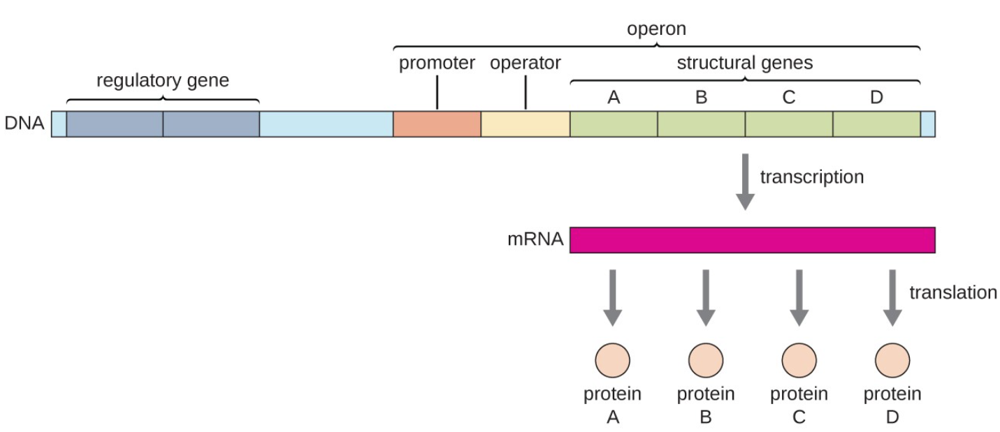
| Logic | Default state | Signal | Typical role | Example |
|---|---|---|---|---|
| Negative inducible | Off, repressor bound | Inducer removes the repressor | Catabolism of a substrate that is usually absent | lac |
| Negative repressible | On | Corepressor activates the repressor | Biosynthesis, shut off when the product is available | trp |
| Positive inducible | Off, no activator | Inducer activates an activator protein | Catabolism needing a strong push | ara (AraC), lac via CAP |
| Positive repressible | On | Ligand inactivates the activator | Less common | Some sugar systems |
The lac operon
lacZ encodes beta-galactosidase, lacY the permease and lacA a transacetylase; lacI, transcribed separately, encodes the repressor. Allolactose, made as a side product by beta-galactosidase itself, binds the repressor and releases it from the operator, so lactose induces its own catabolism. IPTG does the same in the laboratory and is not metabolised, which makes it a gratuitous inducer.
Negative control alone is not enough. cAMP receptor protein (CAP, also called CRP) must bind cAMP and sit upstream of the weak lac promoter to recruit RNA polymerase. Glucose lowers cAMP, so CAP is inactive and the operon stays quiet no matter how much lactose is present. That is catabolite repression, and it produces diauxic growth: E. coli in glucose plus lactose consumes the glucose, pauses, then induces lac.
| Glucose | Lactose | Repressor | CAP-cAMP | Transcription |
|---|---|---|---|---|
| Present | Absent | Bound to operator | Inactive, cAMP low | None |
| Present | Present | Released | Inactive, cAMP low | Very low |
| Absent | Absent | Bound to operator | Active, cAMP high | None |
| Absent | Present | Released | Active, cAMP high | Maximum |
The trp operon
Five genes for tryptophan biosynthesis under a repressor that only works when tryptophan itself is bound, so the pathway shuts down when the product accumulates. On top of that, the leader region carries an attenuator: a stretch encoding a short peptide with two adjacent tryptophan codons. When tryptophan is plentiful the ribosome translates straight through, letting a terminator hairpin form and aborting transcription; when tryptophan is scarce the ribosome stalls at those codons, an alternative antiterminator hairpin forms, and transcription continues into the structural genes. Repression gives a tenfold effect, attenuation another tenfold, and the two multiply.
12.3 Global gene regulation
Some signals require hundreds of genes to change at once. A regulon is every gene controlled by one regulator; a modulon is several regulons under one global controller; a stimulon is everything that responds to a given stimulus, whatever the route.
| System | Trigger | Response |
|---|---|---|
| Catabolite repression | Glucose availability, read as cAMP concentration | CAP switches many sugar operons on or off together, enforcing a hierarchy of carbon sources |
| Stringent response | Amino acid starvation, sensed as uncharged tRNA in the ribosomal A site | RelA makes ppGpp, which shuts down rRNA and tRNA synthesis and redirects polymerase to biosynthesis and stress genes |
| Heat shock | Unfolded protein, sensed through σ32 stability | Chaperones DnaK and GroEL plus proteases |
| SOS response | DNA damage, sensed as single-stranded DNA bound by RecA | LexA repressor is cleaved, derepressing repair genes; error-prone polymerases raise the mutation rate; cell division is halted |
| General stress | Stationary phase, low pH, osmotic shock | RpoS (σ38) turns on broad protective functions |
| Iron limitation | Low intracellular Fe2+ | Fur repressor loses its iron and releases siderophore and uptake genes |
| Nitrogen limitation | Low glutamine | NtrB/NtrC two-component system with σ54 |
| DNA topology and NAPs | Supercoiling, growth phase | H-NS silences hundreds of genes, including many acquired by horizontal transfer; Fis and IHF bend DNA to help initiation |
12.4 Post-initiation control of gene expression
| Mechanism | How it works | Example |
|---|---|---|
| Attenuation | Ribosome position determines which RNA hairpin forms during transcription | trp operon |
| Riboswitch | A metabolite binds the 5' untranslated region directly, changing its fold to expose or occlude a terminator or the ribosome binding site. No protein involved | Thiamine pyrophosphate, flavin mononucleotide, glycine, lysine, guanine riboswitches |
| RNA thermometer | Temperature melts a structure that hid the ribosome binding site | Virulence genes of Listeria at 37 °C |
| Small regulatory RNA | Base pairs with a target mRNA, usually with the chaperone Hfq, blocking or freeing translation and changing stability | RyhB in iron limitation, DsrA acting on rpoS |
| Antisense RNA | Complementary transcript from the opposite strand blocks translation | Plasmid copy number control |
| mRNA half-life | RNase E and helicases degrade transcripts in seconds to minutes; structures and bound ribosomes protect them | Why bacterial expression responds so quickly to a stopped promoter |
| Regulated proteolysis | ClpXP and Lon degrade tagged proteins on demand | Degradation of σ32 once chaperones are free again |
| Allosteric and covalent control | Feedback inhibition; phosphorylation, adenylylation, methylation | Glutamine synthetase adenylylation; chemotaxis receptor methylation |
12.5 Quorum sensing
Quorum sensing lets a population act only when it is large enough for the action to pay. Each cell releases a signal at a low constant rate, so signal concentration reports cell density; above a threshold the signal binds a regulator and switches on the group behaviour.
| System | Signal | Mechanism |
|---|---|---|
| Gram-negative, LuxI/LuxR type | Acyl homoserine lactone (AHL), which diffuses freely across the membrane | LuxI synthesises the AHL; at high concentration it binds LuxR, which then activates the target promoter. Positive feedback on luxI makes the switch sharp |
| Gram-positive | Autoinducing peptide, exported by a transporter | Detected outside the cell by a two-component sensor kinase, so the signal never enters the cytoplasm |
| Interspecies | Autoinducer-2, a furanosyl borate diester | Recognised across many genera, so a cell can sense total population, not just its own kind |
The founding example is Aliivibrio fischeri in the light organ of the bobtail squid, where the lux operon for bioluminescence is expressed only at the high densities reached inside the organ and not in open seawater. Quorum sensing also controls biofilm maturation, virulence factor timing in P. aeruginosa and S. aureus, natural competence in Bacillus and Streptococcus, and swarming. Because it times attack rather than causing damage directly, blocking it (quorum quenching) is an antivirulence strategy that puts less selective pressure on growth than an antibiotic does.
12.6 Two-component regulatory systems
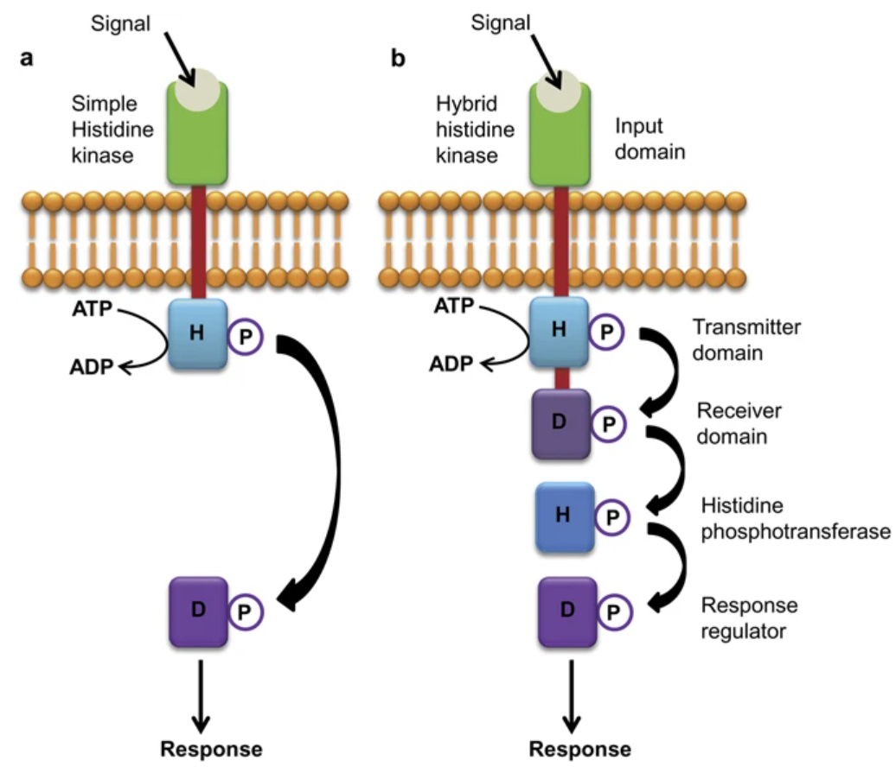
The standard bacterial way to convert an outside signal into a change in transcription. A membrane-spanning sensor histidine kinase detects the stimulus with its periplasmic domain, autophosphorylates on a conserved histidine using ATP, and transfers that phosphoryl group to an aspartate on a cytoplasmic response regulator. The phosphorylated regulator changes conformation and usually binds DNA to activate or repress its target genes. Dephosphorylation, by the regulator itself or by a phosphatase, resets the system, and the balance of kinase and phosphatase activity sets the output.
| System | Senses | Controls |
|---|---|---|
| EnvZ / OmpR | Osmolarity | Balance of the porins OmpF and OmpC |
| PhoQ / PhoP | Low Mg2+, host antimicrobial peptides | Virulence and LPS modification in Salmonella |
| NtrB / NtrC | Nitrogen status | Nitrogen assimilation with σ54 |
| ArcB / ArcA | Redox state, oxygen availability | Switch between aerobic and anaerobic metabolism |
| KinA to Spo0A (phosphorelay) | Starvation | Entry into sporulation, through several intermediate transfers that allow many inputs |
| CheA / CheY | Chemoeffector gradients | Flagellar rotation, the one system whose output is a motor rather than a promoter |
E. coli has about 30 such pairs and some species have over a hundred. Cross-talk between them is kept low by specificity between each kinase and its own regulator, which is why these systems can be multiplied without interference.
12.7 Chemotaxis
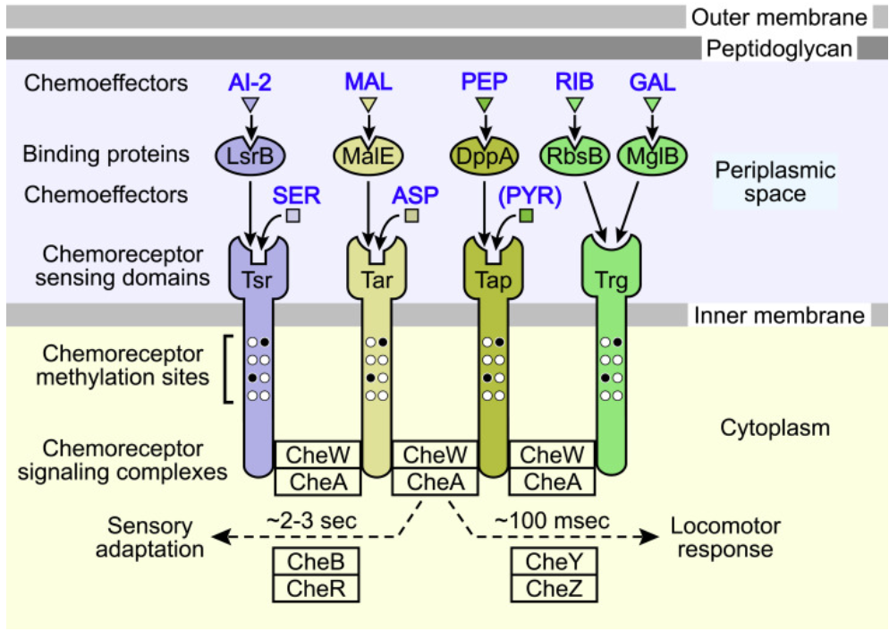
A bacterium is too small to sense a gradient across its own length, so it compares concentration now with concentration a few seconds ago and biases a random walk. Swimming consists of runs, when flagella turn counter-clockwise and bundle into one propeller, broken by tumbles, when rotation reverses and the bundle flies apart, choosing a new direction at random. Moving up an attractant gradient suppresses tumbling, so runs in the good direction last longer. The cell never steers; it edits the length of its runs.
| Component | Role |
|---|---|
| MCPs (Tsr, Tar and others) | Methyl-accepting chemotaxis proteins: transmembrane receptors, clustered at the pole, that bind attractants directly or through periplasmic binding proteins |
| CheW | Couples the receptor to the kinase |
| CheA | Histidine kinase; active when no attractant is bound |
| CheY | Response regulator; phospho-CheY binds FliM at the motor switch and causes clockwise rotation, that is, a tumble |
| CheZ | Phosphatase that dephosphorylates CheY, so the signal decays in under a second |
| CheR | Methyltransferase, methylates the receptor constantly |
| CheB | Methylesterase, activated by phosphorylation from CheA, removes those methyl groups |
Repellents work in the opposite direction, raising CheA activity and shortening runs. Related systems use the same architecture for other stimuli: phototaxis, aerotaxis (through redox sensing by Aer), magnetotaxis using magnetosomes, and energy taxis toward whatever supports the best proton-motive force.
Back to topTopic 9: bacterial genetics
Bacterial genetics is fast because the organisms are haploid, grow in hours, and can be plated in numbers that make rare events findable. Most of classical molecular biology was done this way before it was applied anywhere else.
10.1 Bacteria as subjects of genetic research
| Property | Why it helps |
|---|---|
| Haploid genome | A mutant phenotype shows immediately, with no dominance to mask it |
| Short generation time | 20 minutes for E. coli, so many generations per experiment |
| Huge populations | 109 cells per millilitre means an event at a frequency of 10-8 is still observable |
| Simple growth requirements | Defined media let nutritional phenotypes be tested exactly |
| Clonal colonies | Every colony is a pure genotype ready to be scored |
| Natural gene transfer | Transformation, transduction and conjugation give ways to move alleles between strains and to map them |
| Small genome | Cheap to sequence, easy to complement with a plasmid |
Two techniques underlie almost every experiment. Selection makes only the wanted genotype grow, for example plating on ampicillin so that only resistant cells survive; it can find one cell in 109. Screening lets everything grow and then distinguishes phenotypes, for example blue and white colonies, and it is limited by how many colonies a person can examine. Replica plating, from Joshua and Esther Lederberg, transfers a colony pattern from a master plate to selective plates with velvet, which is how auxotrophs are identified without ever having selected for them, and it proved that mutations arise before the selective agent is applied.
Standard model organisms: E. coli K-12 for Gram-negative work, B. subtilis for Gram-positive work and natural competence, Pseudomonas putida for catabolism, Salmonella Typhimurium for the Ames test and for pathogenesis, and Caulobacter for cell cycle work.
10.2 Mutants, mutations and strains
| Type | Change | Consequence |
|---|---|---|
| Silent | Base substitution, same amino acid | None, because the code is degenerate |
| Missense | Base substitution, different amino acid | Ranges from nothing to complete loss, depending on the residue |
| Nonsense | Base substitution creating a stop codon | Truncated protein, usually null |
| Frameshift | Insertion or deletion not a multiple of three | Everything downstream is misread; almost always null |
| Insertion by transposon | Element inserts into a gene | Knockout with a selectable marker attached, the basis of transposon mutagenesis |
| Deletion | Loss of a segment | Cannot revert, which is useful for building clean strains |
| Conditional lethal | Temperature-sensitive or suppressor-dependent | The only way to study genes that are essential |
Spontaneous mutations arise from replication errors, tautomeric shifts, deamination of cytosine and oxidative damage, at roughly 10-6 to 10-10 per base per generation after proofreading and mismatch repair. Induced mutations come from mutagens with characteristic signatures: base analogues such as 5-bromouracil cause transitions, alkylating agents mispair, intercalating agents such as ethidium and acridine cause frameshifts, nitrous acid deaminates, ultraviolet light makes pyrimidine dimers, and ionising radiation breaks strands.
Mutants can revert by a second mutation at the same site (true reversion) or be rescued elsewhere (suppression), either intragenic, restoring the reading frame or a compensating contact, or intergenic, most often a tRNA that now reads a stop codon as an amino acid. Nomenclature follows a convention: genotype in lower case italics with the allele number, such as lacZ4, and phenotype capitalised and not italic, such as Lac-. An auxotroph needs a supplement its parent did not, so his- cells grow only when histidine is supplied; a prototroph grows on minimal medium.
The Ames test uses that logic to screen chemicals for mutagenicity: histidine auxotroph Salmonella strains are plated with the test compound, with a rat liver extract added to mimic mammalian metabolism, and reversion to His+ colonies measures mutagenic potency.
10.3 Restriction enzymes, vectors and cloning
Restriction endonucleases recognise short palindromic sequences and cut them, leaving 5' or 3' single-stranded overhangs (sticky ends) or blunt ends. They are the bacterial defence against phage DNA, and the host protects its own genome by methylating those sites, which is the restriction-modification system. Naming follows the source organism: EcoRI from E. coli, HindIII from Haemophilus influenzae.
| Vector | Capacity | Use |
|---|---|---|
| Plasmid (pUC, pBR322) | Up to about 10 kb | Routine cloning; needs an origin, a selectable marker and a multiple cloning site |
| Phage lambda | 10 to 20 kb | Libraries, efficient delivery by infection |
| Cosmid | 35 to 45 kb | Plasmid with lambda cos ends, packaged into phage particles |
| BAC (bacterial artificial chromosome) | 100 to 300 kb | Genome projects, based on the F plasmid replicon |
| Expression vector | Any | Strong regulated promoter (T7, tac), ribosome binding site, often a purification tag |
| Shuttle vector | Any | Two origins and two markers, so it replicates in E. coli and in the target organism |
| Suicide vector | Any | Cannot replicate in the target, so it can only be maintained by recombining into the chromosome; the tool for making knockouts |
| Reporter fusion | Any | lacZ, gfp or luciferase fused to a promoter to measure its activity |
The cloning workflow: cut vector and insert with compatible enzymes, ligate with T4 DNA ligase, transform into competent cells (chemically with calcium chloride and heat shock, or by electroporation), then select for the vector marker and screen for the insert. Blue and white screening works because an insert in the multiple cloning site disrupts lacZalpha, so recombinant colonies cannot cleave X-gal and stay white while empty vectors turn blue. Modern alternatives, Gibson assembly and Golden Gate, join fragments by overlap or by type IIS enzymes and need no compatible ends.
10.4 Recombination and DNA transfer
Homologous recombination needs extended sequence identity and is carried out by RecA, which loads onto single-stranded DNA, invades a homologous duplex, and forms a Holliday junction that is resolved by RuvABC. It repairs double-strand breaks and is also the route by which incoming DNA replaces a chromosomal allele. Site-specific recombination instead needs only a short defined site and its own recombinase, as in lambda integration at attB by Int, phase variation by inversion, and integron cassette capture.
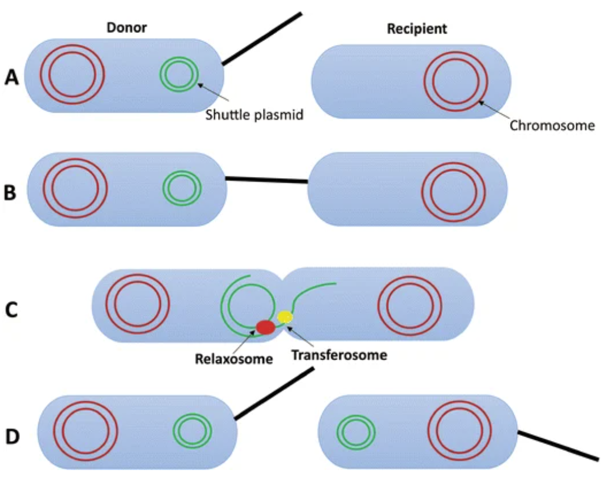
| Mechanism | How DNA moves | Requirements | Points to remember |
|---|---|---|---|
| Transformation | Free DNA taken up from the environment | Competence, either natural (Bacillus, Streptococcus, Neisseria, Haemophilus) or induced in the laboratory | The Griffith and Avery experiments; natural competence often uses a type IV pilus and is regulated by quorum sensing |
| Transduction, generalised | A lytic phage mispackages a random piece of host DNA | Any host sequence, low frequency | Used to map genes by cotransduction frequency, since only about 1 to 2 per cent of the genome fits in a head |
| Transduction, specialised | An imprecise excision of a prophage carries adjacent host genes | A temperate phage with a fixed integration site | Lambda takes gal or bio because they flank attB |
| Conjugation | Direct cell contact through a conjugative pilus, single-stranded transfer by rolling-circle replication | A conjugative plasmid such as F, with tra genes and oriT | The main route for spreading resistance plasmids; also works between distantly related species |
| Transposition | An element moves within or between replicons | Transposase and terminal inverted repeats | Insertion sequences carry only transposase; composite transposons carry resistance genes between two IS elements. Cut and paste against copy and paste (replicative) |
Horizontal transfer is visible in genomes as regions with atypical GC content and codon usage, flanked by insertion sequences or tRNA genes: genomic islands, including pathogenicity islands such as the Salmonella SPI-1 locus and the phage-borne cholera toxin genes. Integrons capture resistance cassettes in series downstream of one promoter, which is how a plasmid accumulates resistance to five drugs at once.
Back to topTopic 10: microbial genomics
Sequencing changed microbiology from a science of what could be cultured to a science of what is there. A bacterial genome that took years and millions of dollars in 1995 now takes a day and a few tens of dollars.
11.1 Genome sequencing
| Platform | Chemistry | Read length | Strengths and weaknesses |
|---|---|---|---|
| Sanger | Chain termination with dideoxynucleotides, capillary separation | 500 to 1000 bp | Very accurate for a single amplicon, too slow and costly for genomes; still the reference for clone checking |
| Illumina | Reversible dye terminators, bridge amplification, sequencing by synthesis | 100 to 300 bp, paired end | Enormous throughput and low error rate; short reads cannot resolve repeats |
| PacBio | Single molecule real time, polymerase watched directly | 10 to 30 kb | Spans repeats, resolves structure, detects methylation; higher raw error, corrected by circular consensus |
| Oxford Nanopore | Current change as DNA threads a protein pore | 10 kb to megabases | Portable and real time, used in outbreak fieldwork; raw accuracy the lowest of the three |
Whole genome shotgun sequencing fragments the genome at random, sequences the fragments, and assembles them by overlap. Coverage is the average number of reads over each base, and 30 to 50 fold is typical for a bacterial draft. Assembly gives contigs, which paired-end or long reads order and orient into scaffolds; a closed genome is a single circular sequence with no gaps. Repeats, transposons and rRNA operons are what break assemblies, which is why a hybrid of short accurate reads and long reads is now standard.
Annotation then finds and names the features: open reading frames from start to stop codons with a plausible ribosome binding site, tRNA and rRNA genes, promoters and terminators. Function is assigned by homology (BLAST against curated databases, HMM profiles of protein families, COG and KEGG categories). Genes with no known relative are hypothetical proteins, and they are still 20 to 40 per cent of a typical genome, which is a fair measure of how much microbiology remains unknown. Haemophilus influenzae in 1995 was the first genome of a free-living organism to be finished.
11.2 Genomic analysis of gene expression
| Method | Measures | Notes |
|---|---|---|
| Microarray | Hybridisation of labelled cDNA to probes for known genes | Historical workhorse; limited to sequences already on the chip, with a narrow dynamic range |
| RNA-seq | Sequencing of the whole transcriptome | No prior knowledge needed; finds small RNAs, operon boundaries, antisense transcripts and transcription start sites. Requires depletion of rRNA, which is most of the RNA in a cell |
| Proteomics (LC-MS/MS) | Protein abundance and modification | Closer to phenotype than mRNA, since transcript level and protein level often disagree |
| Ribosome profiling | mRNA fragments protected by ribosomes | Reports what is actually being translated, and where ribosomes pause |
| ChIP-seq | DNA bound by a given protein | Maps the binding sites of a regulator genome wide, which turns a regulon from a guess into a list |
| Tn-seq or TraDIS | Fitness contribution of every gene at once | Saturating transposon library, sequenced before and after a selection; genes with no insertions recovered are essential under that condition |
| Reporter fusion | Activity of one promoter in living cells | Low throughput but gives single-cell and time-course resolution |
| Metabolomics | Small molecule pools | Completes the picture from genotype to flux |
The result of any of these is a comparison: expression in condition A against condition B, with statistics on thousands of genes at once. Genes that move together are candidates for one regulon, which is how new regulatory networks are proposed and then tested by mutation.
11.3 Comparative genomics
| Concept | Definition |
|---|---|
| Core genome | Genes present in every strain of a species; the essential shared functions |
| Accessory genome | Genes present in some strains only; niche adaptation, resistance, virulence |
| Pan genome | Core plus accessory across all strains examined. It is open in E. coli, where each new genome adds genes, and closed in B. anthracis, where it does not |
| Orthologue | Same gene in different species, separated by speciation |
| Paralogue | Related genes in one genome, separated by duplication |
| Synteny | Conserved gene order between genomes |
| Average nucleotide identity | Genome-wide sequence similarity; above about 95 per cent is treated as one species |
| Genomic island | Horizontally acquired block with atypical composition, often carrying virulence or metabolic genes |
Comparison exposes evolutionary history that a single genome cannot. Obligate symbionts and intracellular pathogens show genome reduction, losing biosynthetic pathways their host supplies: Rickettsia, Buchnera and M. leprae are littered with pseudogenes, and Carsonella has shed almost everything. Pathogens compared with their harmless relatives differ mainly by acquired islands rather than by point mutations. Phylogenomics, using hundreds of concatenated genes instead of 16S alone, gives the resolution needed to trace an outbreak strain from patient to patient, and this is now routine in public health laboratories.
11.4 Metagenomics and related analyses
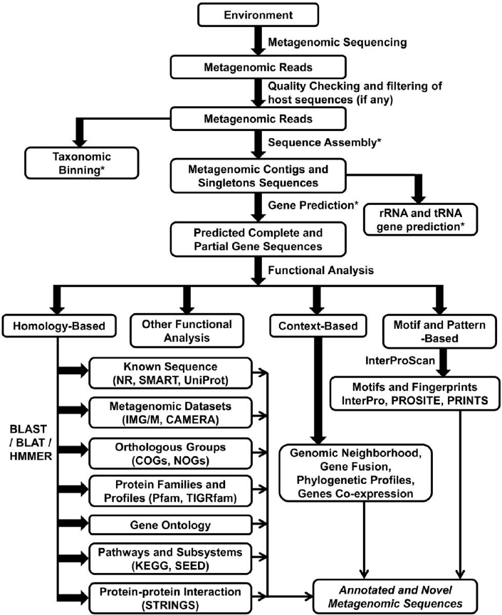
Because well under one per cent of environmental microbes grow on standard media, cultivation-based surveys are a biased sample. Metagenomics avoids the step entirely by sequencing DNA extracted directly from a community.
| Approach | What it gives | Limits |
|---|---|---|
| 16S rRNA amplicon survey | Who is there and in what proportion, cheaply | Taxonomy only, no function; PCR primer bias; copy number varies between organisms; resolution usually stops at genus |
| Shotgun metagenomics | Taxonomy and functional gene content of the whole community | Far more sequencing needed, and assembly is hard when hundreds of genomes are mixed |
| Metagenome-assembled genomes | Draft genomes of uncultured organisms, binned by coverage and composition | Can be chimeric or incomplete; the source of most newly named phyla |
| Metatranscriptomics | Which genes the community is actually expressing | RNA is unstable, so sampling must be immediate |
| Metaproteomics and metabolomics | Proteins and metabolites present in the community | Databases must already contain the sequences |
| Single-cell genomics | Genome of one sorted cell, with no assembly ambiguity | Amplification bias and partial recovery |
| Functional or expression screening | Activity from cloned environmental DNA in a host | Finds novel enzymes and antibiotics without knowing their sequence; needs the host to express them |
| Term | Meaning |
|---|---|
| OTU | Operational taxonomic unit: sequences clustered at a similarity threshold, usually 97 per cent, as a proxy for species |
| ASV | Amplicon sequence variant: exact sequences after error correction, now preferred over OTUs because they are comparable between studies |
| Alpha diversity | Diversity within one sample, as richness and evenness (Shannon, Chao1) |
| Beta diversity | Difference in composition between samples (UniFrac, Bray-Curtis), usually shown as an ordination plot |
| Rarefaction | Subsampling to equal depth so that samples can be compared fairly |
The results reset several fields. Ocean surveys found Prochlorococcus and proteorhodopsin-based phototrophy in organisms nobody had cultured. The Human Microbiome Project mapped body-site communities and linked their disruption to obesity, inflammatory bowel disease and response to drugs. Soil metagenomes remain the richest source of new antibiotics. And whole lineages, the candidate phyla radiation and the Asgard archaea among them, are known almost entirely from assembled sequence rather than from any organism in a flask, which is a real change in what counts as knowing an organism.
Back to topRecall practice: name the thing
A function or description is given; pick the name from the list. Options are matched to the answer for length, wording and format, so nothing about the shape of an option gives it away.
Loading…